Question 1 / 54
Score : 0 / 0
Q1
Est-ce qu'il faut se servir du frein avant et arrière du cyclomoteur en même temps:
- Oui
- Non
Réponse correcte : Oui
Q2
Vous conduisez une voiture accouplée d'une remorque. Quelle est la vitesse maximale autorisée en cas de pluie?
- 50 km/h à l'intérieur d'une localité.
- 90 km/h en dehors d'une localité.
- 110 km/h sur l'autoroute.
Réponse correcte : 50 km/h à l'intérieur d'une localité.
Q3
Vous conduisez une voiture accouplée d'une remorque. Quelle est la vitesse maximale autorisée en cas de pluie?
- 30 km/h à l'intérieur d'une localité.
- 90 km/h en dehors d'une localité.
- 90 km/h sur l'autoroute.
Réponse correcte : 90 km/h sur l'autoroute.
Q4
Est-ce que l'obligation de porter la ceinture de sécurité est également applicable aux passagers qui occupent les sièges arrière?
- Oui
- Non
Réponse correcte : Oui
Q5
Quel comportement adoptez-vous dans cette situation?
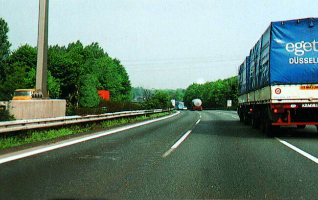
Je n'ai plus le droit de changer de voie de circulation.- En observant attentivement la circulation derrière moi, je change de voie et je passe sur la voie de gauche.
- Je klaxonne et continue sur ma voie.
Réponse correcte : En observant attentivement la circulation derrière moi, je change de voie et je passe sur la voie de gauche.
Q6
Avant d'ouvrir la portière, vous devez observer le trafic venant de l'arrière:
- Oui
- Non
Réponse correcte : Oui
Q7
Le permis B vous autorise également à conduire:
- Un motocycle.
- Un bus de 10 places assises.
- Un tracteur.
Réponse correcte : Un tracteur.
Q8
Le permis B vous autorise également à conduire:
- Un motocycle.
- Un bus de 10 places assises.
- Un cyclomoteur.
Réponse correcte : Un cyclomoteur.
Q9
En transportant des bagages sur le toit de votre voiture:
- La visibilité ne doit pas être entravée.
- Les porte-bagages sont seulement autorisés sur des véhicules utilitaires.
- La masse maximale autorisée peut être dépassée.
Réponse correcte : La visibilité ne doit pas être entravée.
Q10
En quittant l'autoroute y a-t-il risque de sous-estimer sa vitesse?
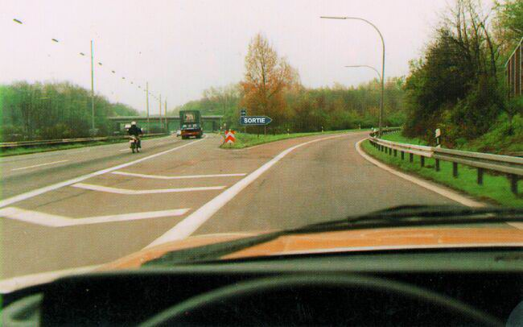
Oui- Non
Réponse correcte : Oui
Q11
Concernant la voie d'accélération sur autoroute:
- Je continue jusqu'au signal "Cédez le passage" et dois toujours m'y arrêter.
- Cette voie sert à ralentir et à rétrograder lorsque je quitte l'autoroute.
- Cette voie sert à accélérer et à m'intégrer dans la circulation sur l'autoroute.
Réponse correcte : Cette voie sert à accélérer et à m'intégrer dans la circulation sur l'autoroute.
Q12
Le dérapage d'un véhicule peut être provoqué par:
- Le système de freinage ABS.
- Des pneus en bon état.
- Une vitesse non adaptée dans les virages.
Réponse correcte : Une vitesse non adaptée dans les virages.
Q13
La limitation de vitesse pour voitures équipées de pneus à crampons (spikes) est de:
- 90 km/h sur autoroute; 70 km/h hors localité.
- 110 km/h sur autoroute; 60 km/h hors localité.
- 90 km/h sur autoroute; 60 km/h hors localité.
Réponse correcte : 90 km/h sur autoroute; 70 km/h hors localité.
Q14
La consommation de carburant peut être réduite:
- En laissant tourner le moteur à l'arrêt.
- En maintenant une vitesse constante.
- En allumant la climatisation.
Réponse correcte : En maintenant une vitesse constante.
Q15
L'obligation de tenir une distance de sécurité suffisamment grande par rapport au véhicule qui vous précède:
- Ne concerne pas les véhicules à deux roues.
- Concerne tous les véhicules.
Réponse correcte : Concerne tous les véhicules.
Q16
Dans cette situation dépassez-vous les cyclistes?
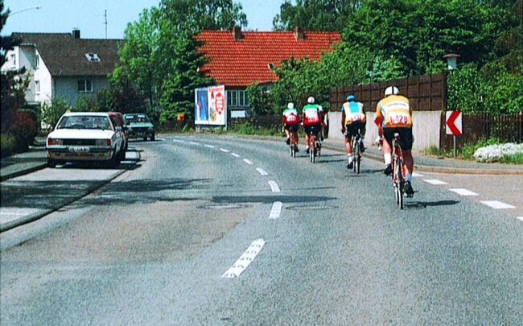
Oui- Non
Réponse correcte : Non
Q17
Le dépassement est autorisé:
- A l'approche du sommet d'une côte.
- Dans un tunnel d'autoroute.
- Sur un passage à niveau.
Réponse correcte : Dans un tunnel d'autoroute.
Q18
La consommation de carburant augmente:
- Si j'adopte une conduite prévoyante.
- Si je monte un porte-bagages sur le toit.
Réponse correcte : Si je monte un porte-bagages sur le toit.
Q19
Après avoir réussi à l'examen pratique du permis de conduire, un cours de formation complémentaire (Colmar-Berg) est obligatoire:
- Oui
- Non
Réponse correcte : Oui
Q20
À quoi devez-vous faire attention si vous voulez contourner un autobus qui s'est arrêté à un arrêt d'autobus?
- Je klaxonne et je contourne sans ralentir.
- Je passe aussi près que possible à côté de l'autobus, pour ne pas quitter ma voie de circulation.
- Je ralentis et je contourne l'autobus en respectant une distance latérale suffisante.
Réponse correcte : Je ralentis et je contourne l'autobus en respectant une distance latérale suffisante.
Q21
À quoi devez-vous faire attention si vous voulez contourner un autobus qui s'est arrêté à un arrêt d'autobus?
- Je klaxonne et je contourne sans ralentir.
- Je me tiens prêt à freiner, car des piétons pourraient surgir devant l'autobus pour traverser la route.
- Je passe aussi près que possible à côté de l'autobus, pour ne pas quitter ma voie de circulation.
Réponse correcte : Je me tiens prêt à freiner, car des piétons pourraient surgir devant l'autobus pour traverser la route.
Q22
Le conducteur d'un véhicule automoteur doit avoir à bord de son véhicule au moins une veste de sécurité:
- Oui
- Non
Réponse correcte : Oui
Q23
Devez-vous avoir à bord de votre véhicule un triangle de détresse?
- Oui
- Non
Réponse correcte : Oui
Q24
Avez-vous le droit de circuler sur cette voie?
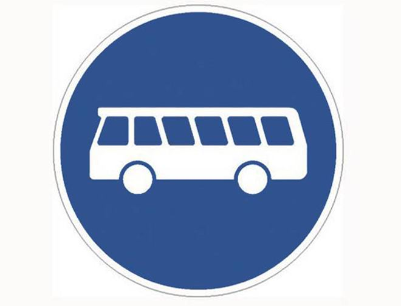
Oui- Non
Réponse correcte : Non
Q25
Avez-vous le droit de traverser cette voie pour accéder à une propriété riveraine?
- Oui
- Non
Réponse correcte : Oui
Q26
Vous conduisez une voiture accouplée d'une remorque à deux essieux. Est-ce que l'accès est autorisé?
 Oui
Oui- Non
Réponse correcte : Non
Q27
Un conducteur de cyclomoteur a-t-il le droit d'accéder à cette rue:
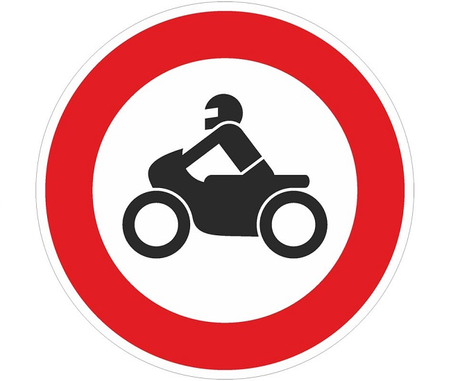
Oui- Non
Réponse correcte : Oui
Q28
Vous conduisez une voiture. Avez-vous le droit de dépasser un camion à cet endroit?
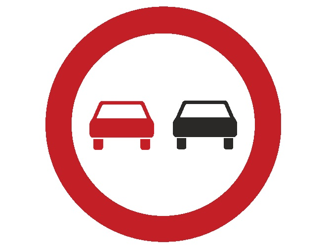
Oui- Non
Réponse correcte : Non
Q29
Vous conduisez une voiture. Avez-vous le droit de dépasser un motocycle sans side-car à cet endroit?
- Oui
- Non
Réponse correcte : Oui
Q30
Avez-vous le droit d'utiliser ce parking avec votre véhicule?
 Oui
Oui- Non
Réponse correcte : Oui
Q31
Êtes-vous autorisé à rouler à 80 km/h sur la voie de gauche?
 Oui
Oui- Non
Réponse correcte : Oui
Q32
Ce signal interdit l'accès aux cyclomoteurs:
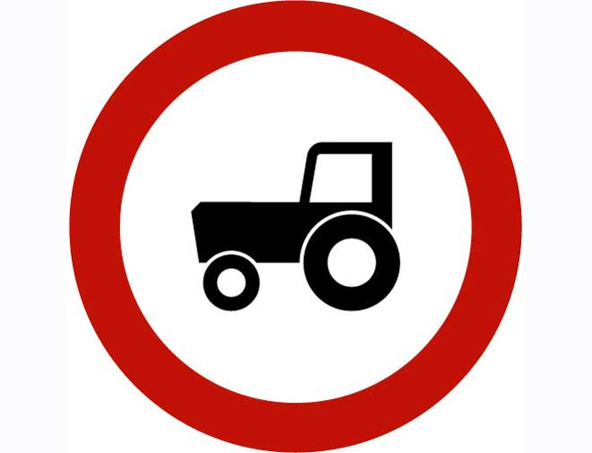
Oui- Non
Réponse correcte : Non
Q33
Quelle attitude devez-vous adopter à partir de ce signal?
 Si mon véhicule est équipé du système ESP, ce signal ne me concerne pas.
Si mon véhicule est équipé du système ESP, ce signal ne me concerne pas.- Je ne dois plus freiner du tout.
- J'évite les brusques coups de volant.
Réponse correcte : J'évite les brusques coups de volant.
Q34
Quelle attitude devez-vous adopter à partir de ce signal?
- J'évite les brusques coups de volant.
- Si mon véhicule est équipé du système ABS, ce signal ne me concerne pas.
- Je ne dois plus freiner du tout.
Réponse correcte : J'évite les brusques coups de volant.
Q35
À partir de ce signal:
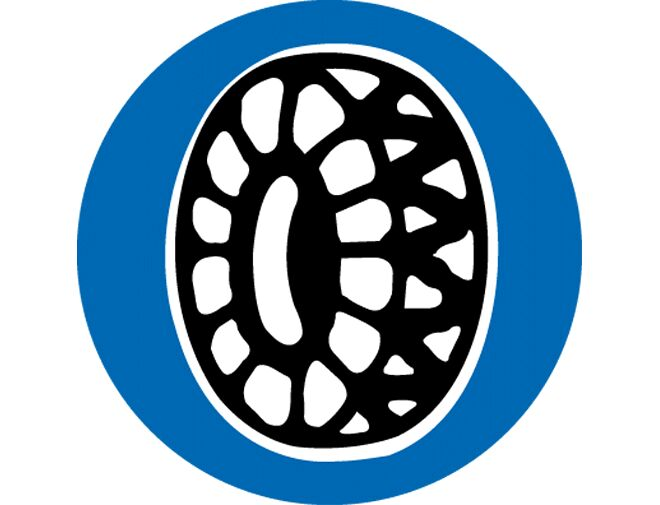
Si mon véhicule est équipé de pneus hiver, j'ai le droit de continuer.- Si mon véhicule est équipé de pneus à crampons, j'ai le droit de continuer.
- Si je monte sur au moins deux roues motrices des chaînes à neige, j'ai le droit de continuer.
Réponse correcte : Si je monte sur au moins deux roues motrices des chaînes à neige, j'ai le droit de continuer.
Q36
Il est conseillé de regarder par dessus l'épaule:
- Dans une descente.
- En sortant d'un terrain privé.
- Avant de changer de voie de circulation.
Réponse correcte : Avant de changer de voie de circulation.
Q37
Il est conseillé de regarder par dessus l'épaule:
- En continuant à rouler tout droit.
- Avant de me rabattre à droite après un dépassement.
- Dans une montée.
Réponse correcte : Avant de me rabattre à droite après un dépassement.
Q38
En ce qui concerne les pneus:
- Une profondeur de profil de 1 mm est largement suffisante.
- Les pneus ne doivent pas présenter de défectuosités.
- Il suffit de vérifier la pression d'air une fois par an.
Réponse correcte : Les pneus ne doivent pas présenter de défectuosités.
Q39
Devez-vous respecter cette limitation de vitesse?
 Oui
Oui- Non
Réponse correcte : Non
Q40
Ce signal indique:
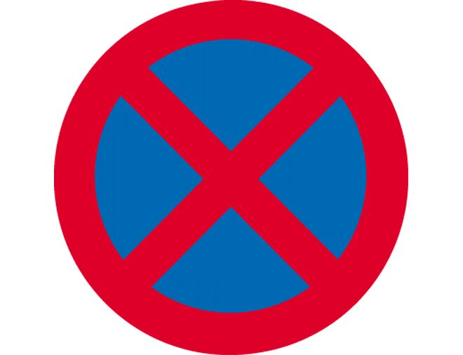
Je suis autorisé à charger / décharger mon véhicule.- Je suis autorisé à laisser monter / descendre un passager.
- Il m'est interdit de m'arrêter.
Réponse correcte : Il m'est interdit de m'arrêter.
Q41
Ce signal interdit l'accès aux:
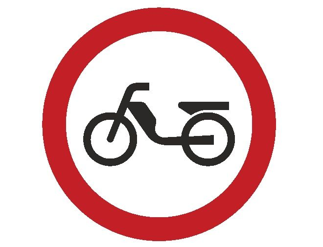
Motocycles sans side-car.- Motocycles avec side-car.
- Cyclomoteurs.
Réponse correcte : Cyclomoteurs.
Q42
L'arrêt est interdit:
- Sur une ligne zigzag.
- À l'intérieur d'une localité sur une route prioritaire.
- Sur des passages pour piétons.
Réponse correcte : Sur des passages pour piétons.
Q43
Quel comportement adoptez-vous?
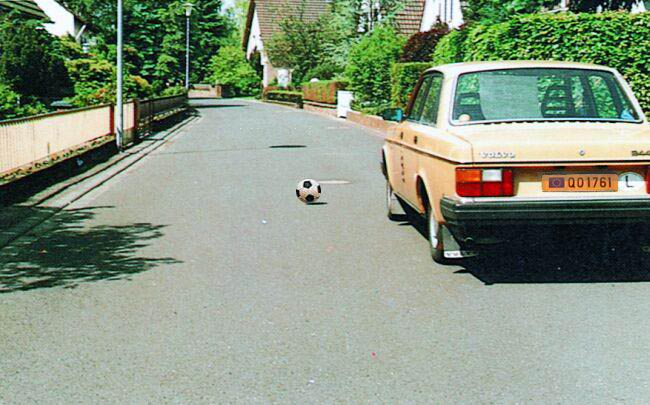
Je continue à rouler normalement.- Je freine tout de suite.
- Je n'ai pas besoin de me tenir prêt à freiner, vu que je ne vois pas d'enfants.
Réponse correcte : Je freine tout de suite.
Q44
La vitesse maximale pour cyclomoteurs est limitée à 45 km/h:
- Oui
- Non
Réponse correcte : Oui
Q45
Avez-vous le droit de transporter des objets sur le cyclomoteur?
- Oui, mais ils ne doivent pas gêner la conduite.
- Non, c'est interdit.
Réponse correcte : Oui, mais ils ne doivent pas gêner la conduite.
Q46
Avant un virage en descente, vous réduisez la vitesse de façon à ne plus devoir freiner fortement dans le virage:
- Oui
- Non
Réponse correcte : Oui
Q47
Y a-t-il une profondeur minimale prescrite pour les pneus d'un cyclomoteur?
- Oui
- Non
Réponse correcte : Oui
Q48
Ce signal interdit l'accès aux:
- Motocycles.
- Cyclomoteurs.
- Cyclistes.
Réponse correcte : Motocycles.
Q49
Un conducteur de cyclomoteur a-t-il le droit d'accéder à cette route:
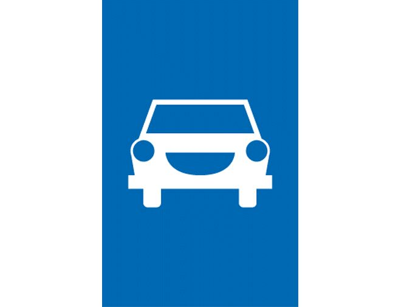
Oui- Non
Réponse correcte : Non
Q50
Pour mieux être vu, le conducteur d'un cyclomoteur:
- Porte des vêtements de protection de couleurs vives.
- N'allume jamais le feu de croisement.
Réponse correcte : Porte des vêtements de protection de couleurs vives.
Q51
En empruntant une longue descente:
- Je freine en permanence.
- Je rétrograde avant la descente.
Réponse correcte : Je rétrograde avant la descente.
Q52
Combien de personnes pouvez-vous transporter sur un tracteur?
- 4, à condition de ne pas dépasser 25 km/h.
- Autant de personnes qu'il y a de places inscrites sur le certificat d'immatriculation.
- Le transport de personnes sur le tracteur est interdit.
Réponse correcte : Autant de personnes qu'il y a de places inscrites sur le certificat d'immatriculation.
Q53
Avez-vous le droit de transporter des personnes sur une remorque (immatriculée)?
- Oui
- Non
Réponse correcte : Non
Q54
À partir de quel âge avez-vous le droit de conduire un tracteur à grande vitesse (TGV)?
- 16 ans.
- 18 ans.
- 21 ans.
Réponse correcte : 18 ans.
Q55
Avez-vous le droit d'atteler plusieurs remorques (immatriculées) à votre tracteur?
- Oui
- Non
Réponse correcte : Non
Q56
Un 2e feu jaune clignotant est obligatoire:
- Quand le 1er feu n'est pas visible de tous les côtés.
- Seulement pour les tracteurs à grande vitesse.
- Quand je circule sans charge.
Réponse correcte : Quand le 1er feu n'est pas visible de tous les côtés.
Q57
Ce signal autorise l'arrêt pour décharger des marchandises:
- Oui
- Non
Réponse correcte : Non
Q58
Le conducteur d'un tracteur a-t-il le droit d'accéder à cette rue?
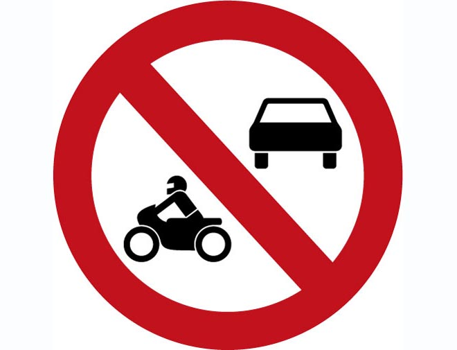
Oui- Non
Réponse correcte : Non
Q59
Que signifie ce signal?
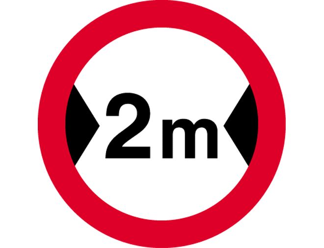
Distance de sécurité minimale obligatoire de 2m.- Accès interdit aux véhicules dont la longueur dépasse 2m.
- Accès interdit aux véhicules dont la largeur dépasse 2m.
Réponse correcte : Accès interdit aux véhicules dont la largeur dépasse 2m.
Q60
Ce signal vous concerne-t-il si votre tracteur dépasse la masse indiquée?
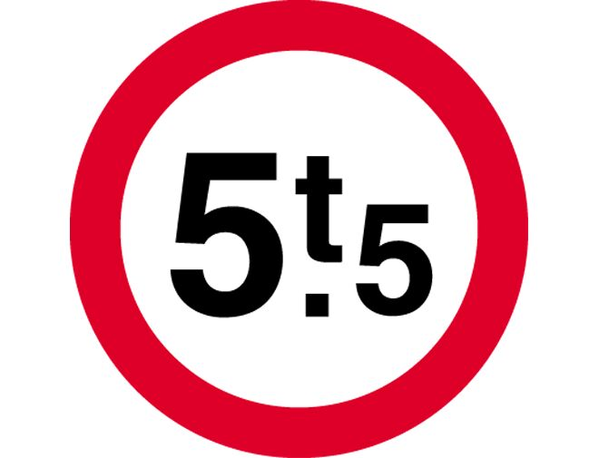
Oui- Non
Réponse correcte : Oui
Q61
Votre tracteur a une longueur de 5 m. Vous avez attelé une remorque de 10 m. Avez-vous le droit d'accéder à cette rue?
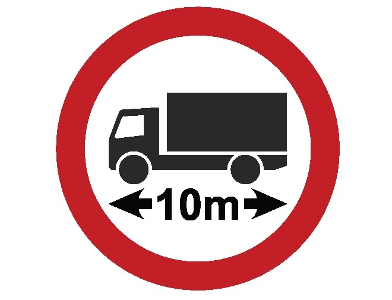
Oui- Non
Réponse correcte : Non
Q62
Avez-vous le droit d'accéder à cette route avec un tracteur?
 Oui
Oui- Non
Réponse correcte : Non
Q63
Quel est votre comportement à l'approche de ce signal:
 Je rétrograde.
Je rétrograde.- J'engage un rapport supérieur de vitesse.
- Je mets la vitesse au point mort.
Réponse correcte : Je rétrograde.
Q64
Le chargement:
- Peut toujours dépasser l'avant du véhicule de plus de 1 m.
- Peut traîner sur la voie publique.
- Ne doit pas entraver le champ de visibilité du conducteur.
Réponse correcte : Ne doit pas entraver le champ de visibilité du conducteur.
Q65
Le chargement doit être arrimé de manière à ce qu'il ne puisse se déplacer:
- Oui
- Non
Réponse correcte : Oui
Q66
Est-ce que vous avez le droit de faire tourner le moteur sans nécessité technique?
- Oui
- Non
Réponse correcte : Non
Q67
Quel comportement adoptez-vous pour quitter l'autoroute?
- Je dois freiner avant de m'engager sur la voie de décélération.
- Je dois rétrograder avant de m'engager sur la voie de décélération.
- J'attends d'être engagé sur la voie de décélération avant de freiner et de rétrograder.
Réponse correcte : J'attends d'être engagé sur la voie de décélération avant de freiner et de rétrograder.
Q68
Un régime moteur élevé fait augmenter la consommation de carburant:
- Oui
- Non
Réponse correcte : Oui
Q69
Une économie de carburant s'obtient:
- Par un moteur bien réglé et techniquement au point.
- En faisant tourner le moteur à un régime élevé.
- En laissant tourner le moteur en cas d'attente prolongée.
Réponse correcte : Par un moteur bien réglé et techniquement au point.
Q70
À qui s'applique ce signal?
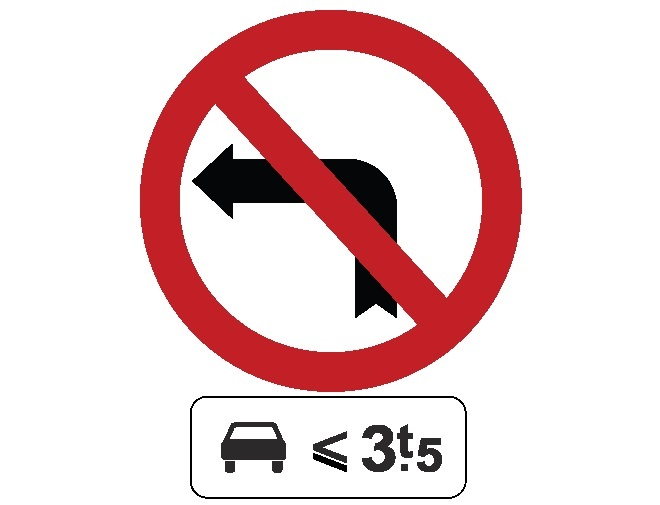
À tous les véhicules automoteurs.- Aux véhicules automoteurs dont la masse maximale autorisée est inférieure ou égale à 3500 kg.
- Aux camions.
Réponse correcte : Aux véhicules automoteurs dont la masse maximale autorisée est inférieure ou égale à 3500 kg.
Q71
Quel est votre comportement dans cette descente?
- J'engage un rapport de vitesse supérieur.
- J'utilise en permanence le frein de service.
- Je rétrograde avant d'entamer la descente.
Réponse correcte : Je rétrograde avant d'entamer la descente.
Q72
Ce signal indique que:
 J'ai le droit de circuler à 100 km/h sur la voie de gauche.
J'ai le droit de circuler à 100 km/h sur la voie de gauche.- J'ai le droit de circuler à 60 km/h sur la voie de droite.
- Je circule sur une autoroute.
Réponse correcte : Je circule sur une autoroute.
Q73
Ce signal indique que:
- J'ai le droit de circuler à 100 km/h sur la voie de gauche.
- Je circule sur une autoroute.
- Je dois circuler au moins à 50 km/h sur la voie de droite.
Réponse correcte : Je circule sur une autoroute.
Q74
Que signifie ce signal?
 Fin de la voie obligatoire pour piétons.
Fin de la voie obligatoire pour piétons.- Fin de la zone piétonne.
- Accès interdit aux piétons.
Réponse correcte : Fin de la zone piétonne.
Q75
À partir de ce signal vous vous attendez à:
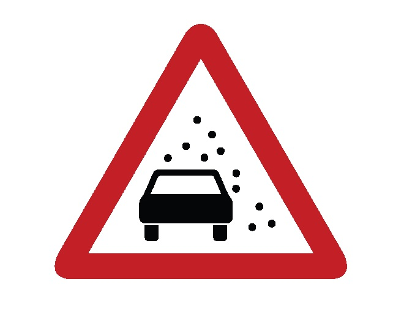
Une visibilité réduite pour cause de brouillard, neige ou pluie.- Des chutes de pierres.
- La projection de gravillons.
Réponse correcte : Une visibilité réduite pour cause de brouillard, neige ou pluie.
Q76
Dans cette zone:
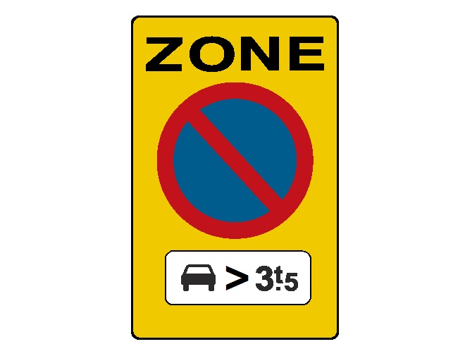
Le stationnement est autorisé pour les voitures à personnes.- Le stationnement est autorisé pour les camions.
- L'accès est interdit aux camions.
Réponse correcte : Le stationnement est autorisé pour les voitures à personnes.
Q77
Que signifie ce signal?
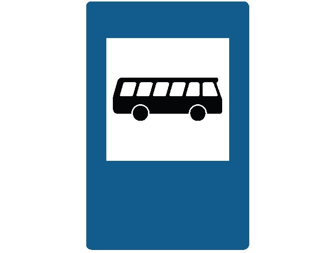
Arrêt d'autobus.- Début d'une chaussée réservée aux autobus.
- Park and Ride (Parking-relais).
Réponse correcte : Arrêt d'autobus.
Q78
Avez-vous le droit de dépasser un tracteur?
- Oui
- Non
Réponse correcte : Non
Q79
Quelle affirmation est correcte?
 Les camions ont le droit d'entrer dans cette zone.
Les camions ont le droit d'entrer dans cette zone.- Les camionnettes ont le droit d'entrer dans cette zone.
- Les voitures ont le droit d'entrer dans cette zone.
Réponse correcte : Les voitures ont le droit d'entrer dans cette zone.
Q80
Je circule en premier:
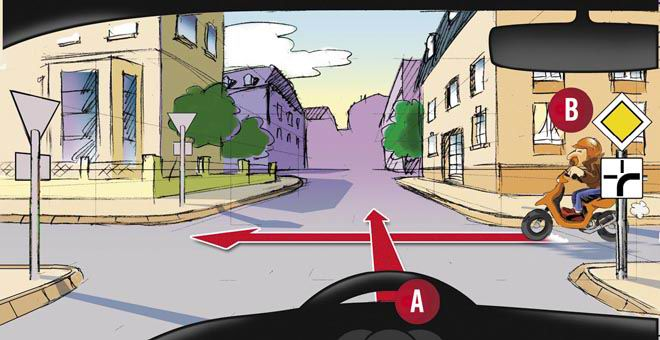
Oui- Non
Réponse correcte : Non
Q81
Je laisse passer le cyclomoteur (B):
- Oui
- Non
Réponse correcte : Oui
Q82
Je laisse passer le cyclomoteur (C):
 Oui
Oui- Non
Réponse correcte : Oui
Q83
Je circule en dernier:
- Oui
- Non
Réponse correcte : Oui
Q84
Je circule en dernier:
 Oui
Oui- Non
Réponse correcte : Non
Q85
Je circule en premier:
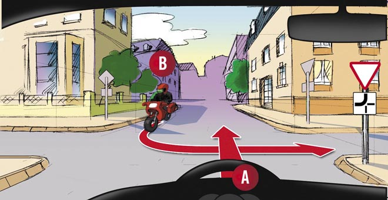
Oui- Non
Réponse correcte : Non
Q86
Je circule en premier:
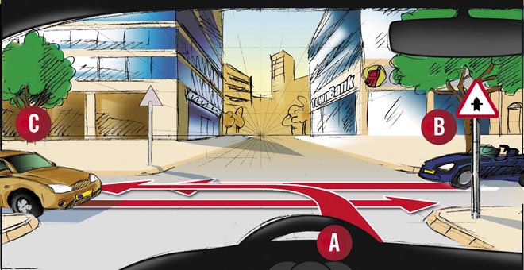
Oui- Non
Réponse correcte : Oui
Q87
Je laisse passer la voiture (B):
- Oui
- Non
Réponse correcte : Non
Q88
Quel est l'ordre de passage?
 B - A - C
B - A - C- A - C - B
- C - B - A
Réponse correcte : C - B - A
Q89
Quel est l'ordre de passage?
 B - A - C
B - A - C- A - C - B
- C - A - B
Réponse correcte : C - A - B
Q90
Je laisse passer la cycliste (B):
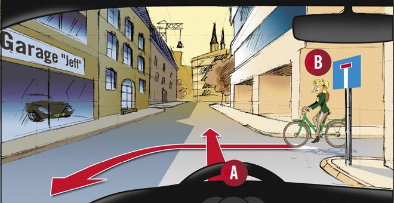
Oui- Non
Réponse correcte : Oui
Q91
Je circule en premier:
- Oui
- Non
Réponse correcte : Non
Q92
Quel est l'ordre de passage?
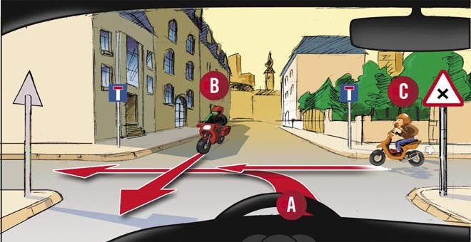
B - A - C- A - B - C
- B - C - A
Réponse correcte : B - C - A
Q93
Je circule en dernier:
 Oui
Oui- Non
Réponse correcte : Non
Q94
Je laisse passer la voiture (B):
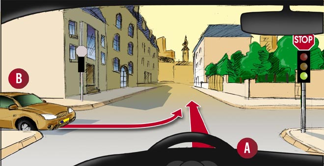
Oui- Non
Réponse correcte : Non
Q95
Je circule en dernier:
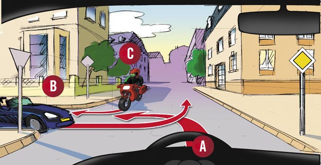
Oui- Non
Réponse correcte : Non
Q96
Faut-il augmenter la distance de sécurité en cas de pluie?
- Oui
- Non
Réponse correcte : Oui
Q97
Faut-il contrôler régulièrement la pression d'air dans les pneus?
- Oui
- Non
Réponse correcte : Oui
Q98
À 40 km/h, un véhicule parcourt en une seconde:
- 1 mètre.
- 12 mètres.
- 20 mètres.
Réponse correcte : 12 mètres.
Q99
Vous avez l'intention de faire demi-tour sur la voie publique:
- Je n'ai pas besoin de céder la priorité aux autres usagers.
- Il est toujours défendu de faire demi-tour sur la voie publique.
- Je dois signaler mon intention clairement et à temps.
Réponse correcte : Je dois signaler mon intention clairement et à temps.
Q100
Est-ce que le dépassement est autorisé même si le rabattement à droite n'est pas garanti?
- Oui
- Non
Réponse correcte : Non
Q101
Où est-il interdit de faire demi-tour?
- Dans un tunnel.
- Sur une route prioritaire hors localité.
- Sur une route prioritaire dans une localité.
Réponse correcte : Dans un tunnel.
Q102
Le conducteur qui est dépassé:
- Doit serrer à droite autant que possible.
- Doit freiner.
- Doit accélérer.
Réponse correcte : Doit serrer à droite autant que possible.
Q103
La consommation d'alcool peut entraîner:
- Une augmentation du champ de vision.
- Une meilleure réaction.
- Une prise de risque élevée.
Réponse correcte : Une prise de risque élevée.
Q104
Dans cette situation, vous vous tenez prêt à freiner car la voiture pourrait sortir devant vous.
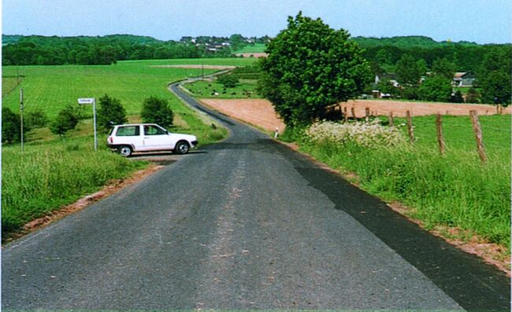
Oui- Non
Réponse correcte : Oui
Q105
Lors d'un freinage à fond, le système ABS permet de raccourcir la distance de réaction:
- Oui
- Non
Réponse correcte : Non
Q106
De quelle façon pouvez-vous réduire la consommation de carburant de votre véhicule?
- En faisant chauffer le moteur avant de partir.
- En faisant maintenir la pression d'air prescrite dans les pneus.
- En changeant souvent la marque de carburant.
Réponse correcte : En faisant maintenir la pression d'air prescrite dans les pneus.
Q107
Quel peut être l'effet provoqué par la consommation d'alcool?
- Le champ de vision du conducteur se réduit.
- L'alcool ne perturbe pas mes capacités de réaction.
Réponse correcte : Le champ de vision du conducteur se réduit.
Q108
Sur quelles routes avez-vous le droit de faire demi-tour?
- Sur les autoroutes.
- Sur les routes à sens unique.
- Sur les routes prioritaires hors localité.
Réponse correcte : Sur les routes prioritaires hors localité.
Q109
À cet endroit vous vous attendez à une distance de freinage allongée:
 Oui
Oui- Non
Réponse correcte : Oui
Q110
Vous voulez contourner la camionnette. Quel est votre comportement?
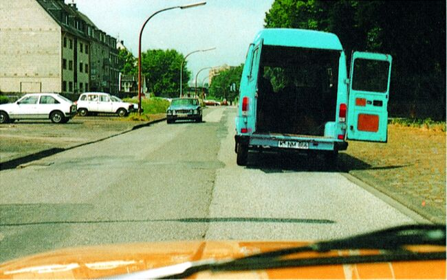
Je ralentis et je m'arrête.- Je n'ai pas besoin de m'arrêter.
- J'accélère pour pouvoir passer avant la voiture bleue.
Réponse correcte : Je ralentis et je m'arrête.
Q111
Vous suivez un camion-remorque qui veut virer à droite dans une rue étroite. À quoi devez-vous vous attendre?
- Le camion-remorque va s'arrêter pour laisser passer les véhicules qui le suivent.
- Pour pouvoir tourner à droite, le camion-remorque va se dévier vers la gauche.
- Pour virer à droite le camion-remorque n'a pas besoin de quitter sa voie.
Réponse correcte : Pour pouvoir tourner à droite, le camion-remorque va se dévier vers la gauche.
Q112
Pendant la nuit, vous devez passer des feux de route aux feux de croisement:
- Lorsque vous croisez un piéton.
- Lorsqu'un autre véhicule vous suit à courte distance.
- Lorsque vous circulez en dehors des localités.
Réponse correcte : Lorsque vous croisez un piéton.
Q113
Ce signal vous autorise à vous arrêter:
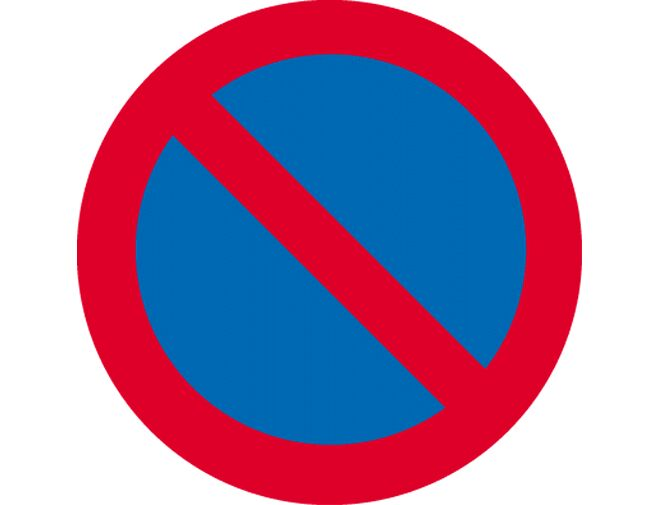
Oui- Non
Réponse correcte : Oui
Q114
Auprès de quel signal devez-vous céder la priorité?
 Alternative A
Alternative A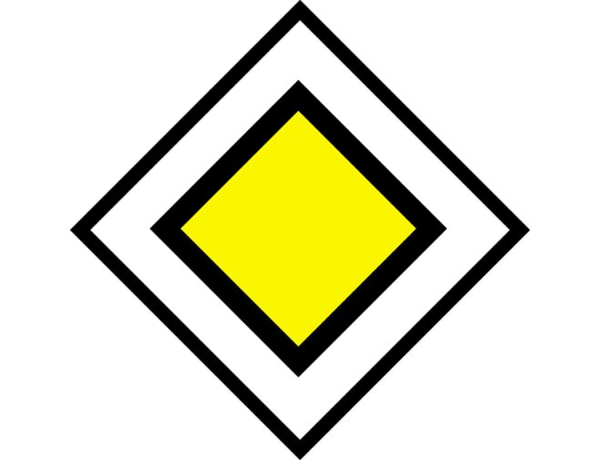
Alternative B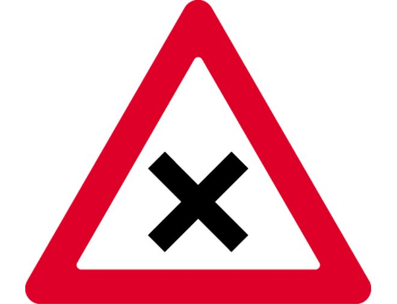
Alternative C
Réponse correcte : Alternative C
Q115
Quel signal vous donne la priorité?
- Alternative A
- Alternative B
 Alternative C
Alternative C
Réponse correcte : Alternative A
Q116
À l'approche d'une intersection vous voyez cette signalisation:
 Je traverse l'intersection sans m'arrêter.
Je traverse l'intersection sans m'arrêter.- Je dois m'arrêter.
- J'avance jusqu'à l'intersection et je cède la priorité à gauche et à droite.
Réponse correcte : Je traverse l'intersection sans m'arrêter.
Q117
Dans cette rue, vous avez le droit de:
 Tourner à gauche.
Tourner à gauche.- Faire demi-tour.
Réponse correcte : Tourner à gauche.
Q118
Que signifie ce signal?
 Accès interdit aux piétons.
Accès interdit aux piétons.- Attention enfants.
- Approche d'un passage pour piétons.
Réponse correcte : Approche d'un passage pour piétons.
Q119
Quel est votre comportement en présence de ce signal?
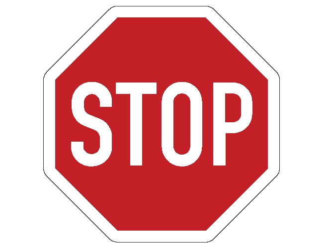
S'il n'y a pas de ligne d'arrêt, je continue sans m'arrêter.- S'il n'y a pas de ligne d'arrêt, je dois m'arrêter à l'endroit où la visibilité est suffisante.
- Je dois céder la priorité à tous les autres usagers.
Réponse correcte : S'il n'y a pas de ligne d'arrêt, je dois m'arrêter à l'endroit où la visibilité est suffisante.
Q120
Que signifie ce signal?
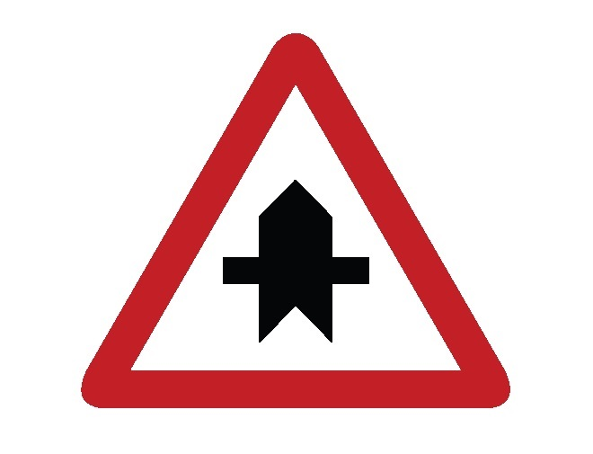
J'ai la priorité à la prochaine intersection.- J'ai la priorité jusqu'au signal "Fin de la route prioritaire".
- Je dois céder la priorité.
Réponse correcte : J'ai la priorité à la prochaine intersection.
Q121
À partir de ce signal:
 Je dois m'attendre à des pierres sur la chaussée.
Je dois m'attendre à des pierres sur la chaussée.- Je dois m'attendre à une route fraîchement goudronnée.
- Je réduis la distance de sécurité par rapport au véhicule qui me précède.
Réponse correcte : Je dois m'attendre à des pierres sur la chaussée.
Q122
Que signifie ce signal?
 Zone résidentielle.
Zone résidentielle.- Zone piétonne.
- Chemin obligatoire pour piétons.
Réponse correcte : Zone piétonne.
Q123
Quelle affirmation est correcte?
 Je dois m'attendre à des véhicules sortant de cette rue.
Je dois m'attendre à des véhicules sortant de cette rue.- Les riverains peuvent y accéder de ce côté.
- Aucun véhicule ne peut sortir de ce côté de la rue.
Réponse correcte : Je dois m'attendre à des véhicules sortant de cette rue.
Q124
À une intersection ce feu orange clignote. Est-ce que vous devez-vous arrêter?
 Oui
Oui- Non
Réponse correcte : Oui
Q125
À partir de ce signal:
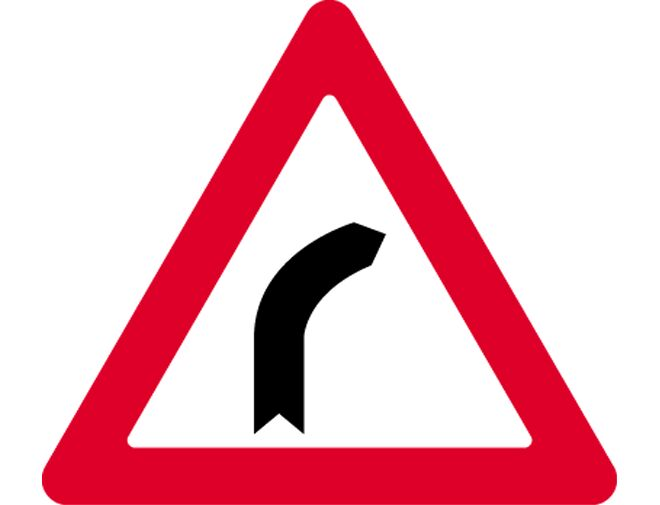
Je m'approche d'une descente.- J'adapte ma vitesse.
- J'accélère.
Réponse correcte : J'adapte ma vitesse.
Q126
En présence de ce signal:
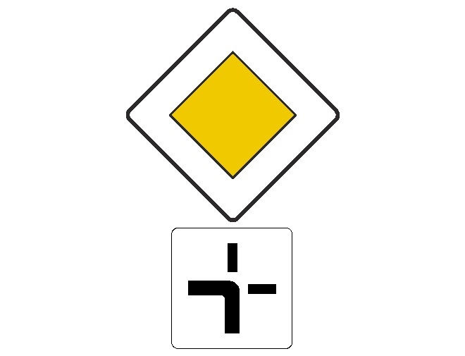
Je dois tourner à gauche.- La route prioritaire continue tout droit.
- La route prioritaire tourne à gauche.
Réponse correcte : La route prioritaire tourne à gauche.
Q127
À partir de ce signal vous vous attendez:
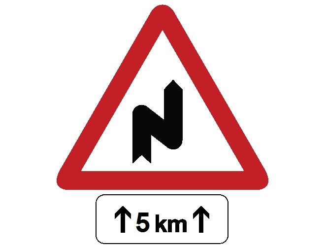
À une succession de virages sur une longueur de 5 km.- À une montée dangereuse sur une longueur de 5 km.
- À une succession de virages commençant après 5 km.
Réponse correcte : À une succession de virages sur une longueur de 5 km.
Q128
Un obstacle est signalé par ce signal:
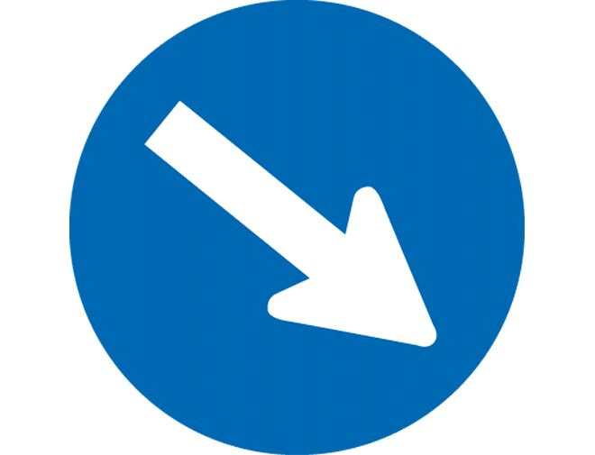
Je contourne l'obstacle par la gauche.- Je contourne l'obstacle par la droite.
- Je contourne l'obstacle soit par la gauche soit par la droite.
Réponse correcte : Je contourne l'obstacle par la droite.
Q129
La circulation venant en sens inverse est prioritaire:
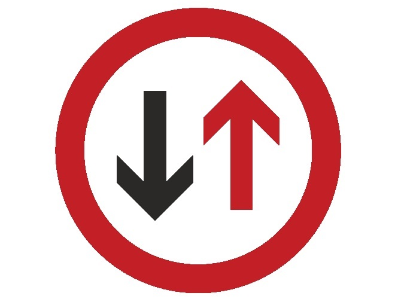
Oui- Non
Réponse correcte : Oui
Q130
Avez-vous le droit d'accéder à votre terrain?
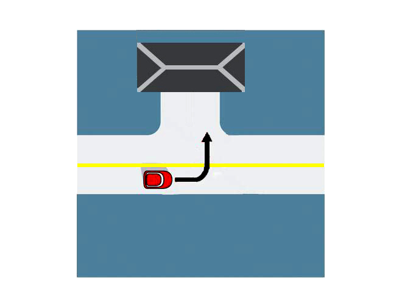
Oui- Non
Réponse correcte : Non
Q131
À partir de ce signal vous risquez d'être dévié de votre trajectoire:
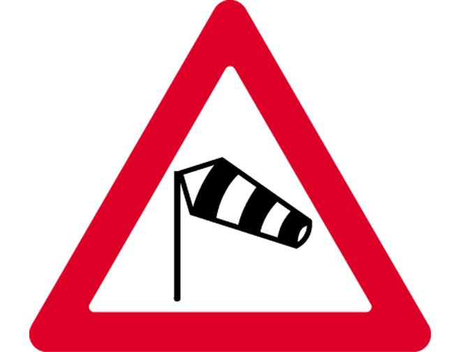
Oui- Non
Réponse correcte : Oui
Q132
Que signifie ce signal?
 Accès interdit aux piétons et cyclistes.
Accès interdit aux piétons et cyclistes.- Attention enfants.
- Approche d'un passage pour piétons et cyclistes.
Réponse correcte : Approche d'un passage pour piétons et cyclistes.
Q133
Que signifie ce signal?
 Accès interdit aux piétons.
Accès interdit aux piétons.- Passage pour piétons et cyclistes.
- Accès interdit aux cyclistes.
Réponse correcte : Passage pour piétons et cyclistes.
Q134
À cet endroit vous voulez tourner à droite:
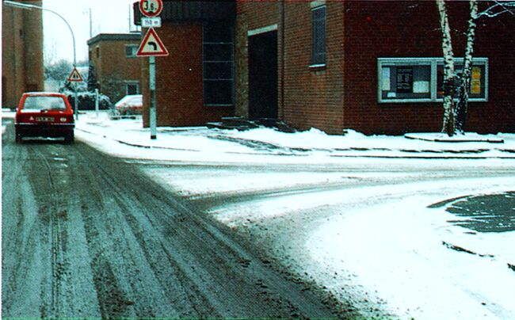
Mon véhicule risque de déraper.- Mon véhicule étant équipé des systèmes ABS et ESP, je ne risque rien.
- Mon véhicule, étant équipé de pneus d'hiver, ne peut pas déraper.
Réponse correcte : Mon véhicule risque de déraper.
Q135
Qui a le droit d'accéder à cette rue?
 Un motocycle sans side-car.
Un motocycle sans side-car.- Un autocar.
- Une voiture à personnes.
Réponse correcte : Un motocycle sans side-car.
Q136
Quelle distance de sécurité par rapport au véhicule qui vous précède devez-vous garder en dehors des agglomerations?
- 5 mètres sont suffisants.
- Au moins 2 secondes.
- 10 mètres sont suffisants.
Réponse correcte : Au moins 2 secondes.
Q137
Vous suivez un train routier qui s'apprête à virer à droite pour accéder à une rue étroite. À quoi devez-vous vous attendre?
- Le train routier va réduire sensiblement sa vitesse.
- Le train routier va s'arrêter pour me laisser passer.
- Pour virer à droite, le train routier n'a pas besoin de quitter sa voie.
Réponse correcte : Le train routier va réduire sensiblement sa vitesse.
Q138
Ce panneau additionnel s'applique-t-il à votre véhicule?
 Oui
Oui- Non
Réponse correcte : Oui
Q139
Les barrières d'un passage à niveau sont ouvertes, mais les feux rouges clignotants sont allumés. Est-ce que vous devez vous arrêter?
- Oui
- Non
Réponse correcte : Oui
Q140
Est-ce que vous avez le droit de vous arrêter sur un arrêt d'autobus?
- Oui
- Non
Réponse correcte : Non
Q141
Est-ce que, dans un rayon de 10 km autour de son domicile, le conducteur de cyclomoteur doit avoir les papiers de bord sur lui:
- Oui
- Non
Réponse correcte : Oui
Q142
À partir de ce signal (dans des conditions de circulation normale):
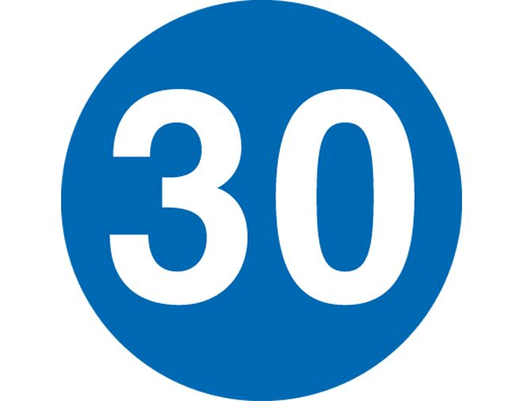
Je dois circuler au moins à 30 km/h.- Je n'ai pas le droit de dépasser les 30 km/h.
- J'ai le droit de rouler à 20 km/h.
Réponse correcte : Je dois circuler au moins à 30 km/h.
Q143
Que signifie ce signal?
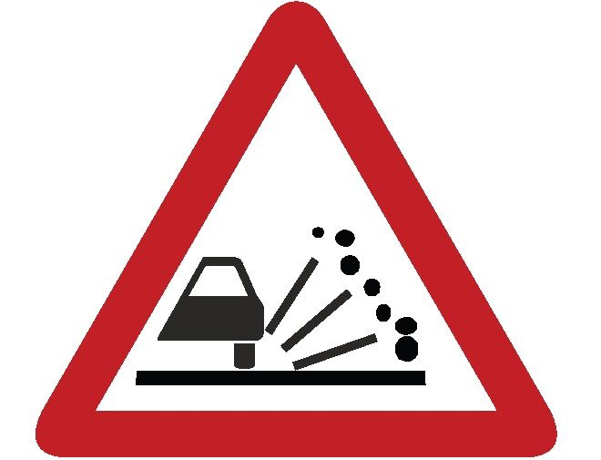
Visibilité réduite.- Projection de gravillons.
- Chutes de pierres.
Réponse correcte : Projection de gravillons.
Q144
Pour économiser du carburant et pour réduire l'émission de gaz nocifs:
- Vous accélérez à fond.
- Vous adoptez une conduite équilibrée.
- Vous accélérez et vous freinez à maintes reprises.
Réponse correcte : Vous adoptez une conduite équilibrée.
Q145
Est-ce que ce cyclomoteur est bien placé pour virer à gauche?
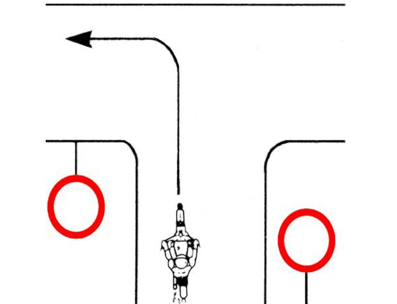
Oui- Non
Réponse correcte : Non
Q146
À partir de ce signal vous avez le droit:
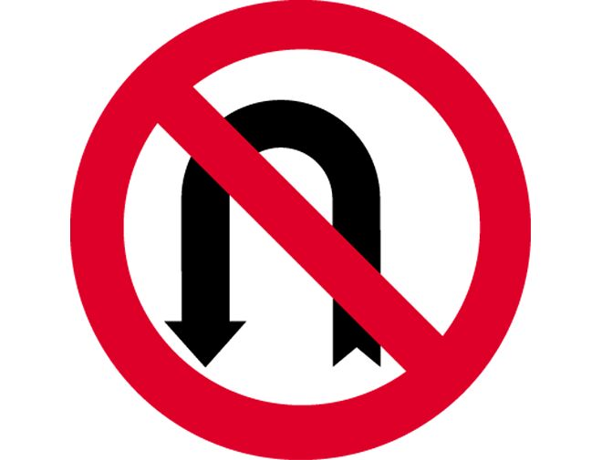
De tourner à gauche.- De faire demi-tour.
Réponse correcte : De tourner à gauche.
Q147
Un conducteur de cyclomoteur a-t-il le droit d’accéder à cette rue:
 Oui
Oui- Non
Réponse correcte : Non
Q148
Dans une localité, vous voulez dépasser un cycliste:
- En localité tout dépassement est interdit.
- La distance latérale doit être de 1,5 mètres au moins, car le cycliste pourrait faire subitement un crochet.
Réponse correcte : La distance latérale doit être de 1,5 mètres au moins, car le cycliste pourrait faire subitement un crochet.
Q149
Est-ce que le système ABS fonctionne si ce témoin reste allumé?
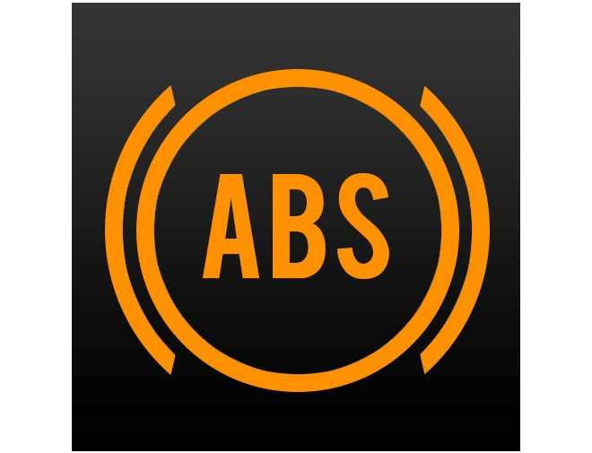
Oui- Non
Réponse correcte : Non
Q150
Le permis B vous autorise-t-il à tracter une remorque ≤ 750 kg?
- Oui
- Non
Réponse correcte : Oui
Q151
Le permis B vous autorise-t-il à conduire un taxi?
- Oui, toujours.
- Non, jamais.
- Uniquement après la période de stage.
Réponse correcte : Uniquement après la période de stage.
Q152
Avez-vous le droit de transporter dans votre voiture plus de personnes qu'il y a de places inscrites sur le certificat d'immatriculation?
- Oui, s'il s'agit d'enfants de moins de 12 ans.
- Non, en aucun cas.
Réponse correcte : Non, en aucun cas.
Q153
Quelle est la largeur maximale autorisée de votre véhicule, chargement inclus?
- 4,00 m.
- 1,50 m.
- 2,55 m.
Réponse correcte : 2,55 m.
Q154
Quelle est la longueur maximale autorisée de votre véhicule, chargement inclus?
- 12,00 m.
- 18,00 m.
- 2,55 m.
Réponse correcte : 12,00 m.
Q155
Quelle est la hauteur maximale autorisée de votre véhicule, chargement inclus?
- 4,00 m.
- 4,80 m.
- 2,55 m.
Réponse correcte : 4,00 m.
Q156
Quelle est la limitation de vitesse sur autoroute en cas de pluie ou d'autres précipitations?
- 90 km/h.
- 110 km/h.
- 130 km/h.
Réponse correcte : 110 km/h.
Q157
Quelle est la limitation de vitesse sur autoroute si vous tractez une remorque?
- 90 km/h.
- 110 km/h.
- 130 km/h.
Réponse correcte : 90 km/h.
Q158
Si vous tractez une remorque, quelle est la limitation de vitesse sur autoroute en cas de pluie ou d'autres précipitations?
- 90 km/h.
- 110 km/h.
- 130 km/h.
Réponse correcte : 90 km/h.
Q159
Si vous tractez une remorque, quelle est la limitation de vitesse en dehors d'une localité?
- 75 km/h.
- 90 km/h.
- 110 km/h.
Réponse correcte : 75 km/h.
Q160
Est-il obligatoire d'allumer les feux de détresse sur autoroute dès que la fluidité du trafic diminue fortement?
- Oui
- Non
Réponse correcte : Oui
Q161
En cas de panne sur autoroute:
- je reste assis dans le véhicule.
- je m'abrite derrière les glissières.
Réponse correcte : je m'abrite derrière les glissières.
Q162
Avez-vous le droit de monter des pneus été sur l'essieu avant et des pneus hiver (M+S) sur l'essieu arrière d'une camionnette?
- Oui
- Non
Réponse correcte : Non
Q163
Quelle est la vitesse maximale autorisée en dehors des agglomérations pour un véhicule équipé de pneus à crampons (spikes)?
- 50 km/h.
- 70 km/h.
- 90 km/h.
Réponse correcte : 70 km/h.
Q164
Combien de remorques avez-vous le droit de tracter avec votre véhicule?
- Une.
- Deux.
- Trois.
Réponse correcte : Une.
Q165
Avez-vous le droit d'accéder à cette rue?
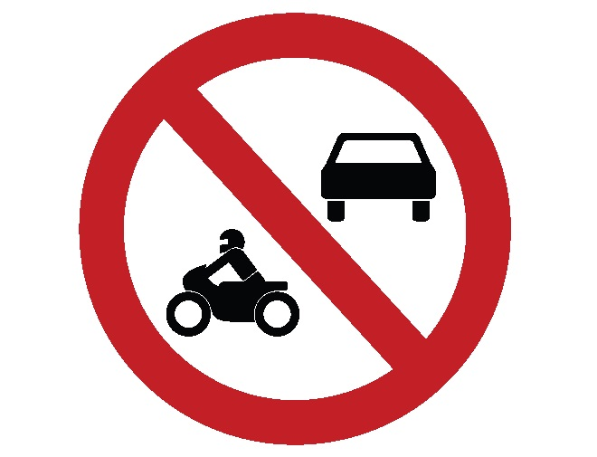
Oui- Non
Réponse correcte : Non
Q166
Avez-vous le droit de dépasser un camion?
- Oui
- Non
Réponse correcte : Non
Q167
Avez-vous le droit de dépasser un tracteur?
- Oui
- Non
Réponse correcte : Non
Q168
Avez-vous le droit de dépasser un motocycle sans<br>side-car?
- Oui
- Non
Réponse correcte : Oui
Q169
Avez-vous le droit de dépasser un motocycle avec<br>side-car?
- Oui
- Non
Réponse correcte : Non
Q170
A partir de ce signal vous avez le droit de dépasser:
- un tracteur agricole.
- une machine.
- une bicyclette.
Réponse correcte : une bicyclette.
Q171
Sur l'autoroute, à partir de ce signal, avez-vous le droit de dépasser la vitesse de 90 km/h?
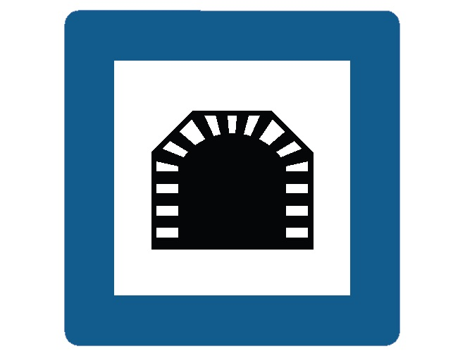
Oui- Non
Réponse correcte : Non
Q172
Est-ce que vous avez le droit de rouler à 70 km/h sur la voie de gauche?
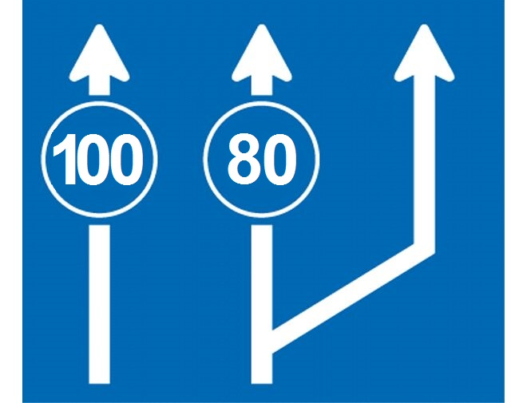
Oui- Non
Réponse correcte : Non
Q173
Est-ce que vous avez le droit de rouler à 70 km/h sur la voie de gauche?
- Oui
- Non
Réponse correcte : Oui
Q174
A partir de ce signal vous avez le droit de dépasser:
- un tracteur agricole.
- une machine.
- un motocycle sans side-car.
Réponse correcte : un motocycle sans side-car.
Q175
Est-ce que tout signal complété par ce panneau additionnel vous concerne?
- Oui
- Non
Réponse correcte : Oui
Q176
Avez-vous le droit d'accéder à cette rue?
- Oui
- Non
Réponse correcte : Non
Q177
Avez-vous le droit d'accéder à cette rue?
 Oui
Oui- Non
Réponse correcte : Non
Q178
Avez-vous le droit d'accéder à cette rue si vous conduisez une voiture?
- Oui
- Non
Réponse correcte : Oui
Q179
Avez-vous le droit d'accéder à cette rue si vous conduisez une camionnette?
- Oui
- Non
Réponse correcte : Non
Q180
Avez-vous le droit d'accéder à cette rue si vous tractez une remorque?
- Non
- Oui, s'il s'agit d'une remorque à deux essieux.
- Oui, s'il s'agit d'une remorque ≤ 750 kg.
Réponse correcte : Non
Q181
Avez-vous le droit d'accéder à cette rue avec une remorque à plusieurs essieux?
- Oui
- Non
Réponse correcte : Non
Q182
Avez-vous le droit d'accéder à cette rue avec une remorque à un seul essieu?
- Oui
- Non
Réponse correcte : Oui
Q183
Avez-vous le droit d'accéder à cette rue avec une remorque à plusieurs essieux?
- Oui
- Non
Réponse correcte : Non
Q184
Que signifie ce signal?
- Accès interdit aux véhicules dont la longueur dépasse 3,5 m.
- Accès interdit aux véhicules dont la hauteur dépasse 3,5 m.
- Distance de sécurité minimale de 3,5 m entre deux véhicules.
Réponse correcte : Accès interdit aux véhicules dont la hauteur dépasse 3,5 m.
Q185
Que signifie ce signal?
- Accès interdit aux véhicules dont la longueur dépasse 2 m.
- Accès interdit aux véhicules dont la largeur dépasse 2 m.
- Distance de sécurité minimale de 2 m entre deux véhicules.
Réponse correcte : Accès interdit aux véhicules dont la largeur dépasse 2 m.
Q186
Avez-vous le droit d'accéder à cette rue si la masse en charge de votre voiture dépasse 2 t?
 Oui
Oui- Non
Réponse correcte : Non
Q187
Avez-vous le droit d'accéder à cette rue si la longueur de votre voiture dépasse 7 m?
- Oui
- Non
Réponse correcte : Non
Q188
Avez-vous le droit d'accéder à cette rue si la longueur totale de votre voiture avec remorque dépasse 7 m?
- Oui
- Non
Réponse correcte : Non
Q189
Lequel de ces signaux vous interdit l'accès?
- Le signal A.
- Le signal B.
Réponse correcte : Le signal A.
Q190
Ce signal est:
- un signal de danger.
- un signal d'interdiction.
- un signal d'obligation.
Réponse correcte : un signal de danger.
Q191
Ce signal est:
- un signal de danger.
- un signal d'interdiction.
- un signal d'obligation.
Réponse correcte : un signal de danger.
Q192
Ce signal vous indique:
 débouché sur un quai ou une berge.
débouché sur un quai ou une berge.- pont mobile.
- écluse.
Réponse correcte : débouché sur un quai ou une berge.
Q193
Ce signal vous indique:
- chaussée en mauvais état.
- projection de gravillons.
- approche d'un tunnel à 2 tubes.
Réponse correcte : chaussée en mauvais état.
Q194
A partir de ce signal vous vous tenez prêt à freiner:
 Oui
Oui- Non
Réponse correcte : Oui
Q195
Ce signal vous indique:
 succession de virages dont le premier est un virage à gauche.
succession de virages dont le premier est un virage à gauche.- succession de virages dont le premier est un virage à droite.
Réponse correcte : succession de virages dont le premier est un virage à gauche.
Q196
A partir de ce signal vous risquez d'être dévié de votre trajectoire:
- Oui
- Non
Réponse correcte : Oui
Q197
A partir de ce signal vous évitez de dépasser un autre véhicule:
- Oui
- Non
Réponse correcte : Oui
Q198
A partir de ce signal vous vous attendez à un ralentissement de la circulation:
- Oui
- Non
Réponse correcte : Oui
Q199
A partir de ce signal vous vous tenez prêt à allumer les feux de détresse:
- Oui
- Non
Réponse correcte : Oui
Q200
A l'approche de ce signal, vous vous tenez prêt à freiner:
 Oui
Oui- Non
Réponse correcte : Oui
Q201
Ce signal vous indique:
- chemin obligatoire pour cyclistes.
- accès interdit aux cyclistes.
- passage pour cyclistes.
Réponse correcte : accès interdit aux cyclistes.
Q202
Quel signal autorise l'accès aux riverains?
- Le signal A.
 Le signal B.
Le signal B.- Les deux signaux.
Réponse correcte : Le signal B.
Q203
Est-ce qu'un véhicule peut déboucher de cette rue?
- Oui
- Non
Réponse correcte : Oui
Q204
Est-ce qu'un véhicule peut déboucher de cette rue?
- Oui
- Non
Réponse correcte : Oui
Q205
En tant que riverain, avez-vous le droit d'accéder à cette rue?
- Oui
- Non
Réponse correcte : Non
Q206
En tant que fournisseur, avez-vous le droit d'accéder à cette rue?
- Oui
- Non
Réponse correcte : Non
Q207
Ce signal indique:
 interdiction de tourner à gauche.
interdiction de tourner à gauche.- direction obligatoire à gauche.
- virage dangereux à gauche.
Réponse correcte : interdiction de tourner à gauche.
Q208
Ce signal indique la fin de l'interdiction de tourner à gauche:
- Oui
- Non
Réponse correcte : Non
Q209
Ce signal indique:
 interdiction de tourner à droite.
interdiction de tourner à droite.- direction obligatoire à droite.
- virage dangereux à droite.
Réponse correcte : interdiction de tourner à droite.
Q210
Ce signal indique:
- interdiction de tourner à gauche.
- interdiction de faire demi-tour.
- interdiction de faire marche arrière.
Réponse correcte : interdiction de faire demi-tour.
Q211
Il s'agit ici d'une:
- vitesse conseillée.
- vitesse maximale autorisée.
Réponse correcte : vitesse maximale autorisée.
Q212
Lequel de ces signaux vous oblige à céder la priorité à la circulation venant de droite?
- Le signal A.
- Le signal B.
Réponse correcte : Le signal A.
Q213
Est-ce que ce signal vous oblige à céder la priorité à la circulation venant de droite?
- Oui
- Non
Réponse correcte : Oui
Q214
Est-ce que ce signal vous oblige à céder la priorité à la circulation venant de droite?
- Oui
- Non
Réponse correcte : Non
Q215
Est-ce que ce signal vous indique que vous devez céder la priorité à la circulation venant de droite et à la circulation venant de gauche?
- Oui
- Non
Réponse correcte : Non
Q216
A l'approche de ce signal:
- il est conseillé d'observer la circulation venant de gauche.
- il est inutile d'observer la circulation venant de gauche.
- il est obligatoire de céder la priorité à la circulation venant de gauche.
Réponse correcte : il est conseillé d'observer la circulation venant de gauche.
Q217
Ce signal vous indique que vous devez céder la priorité à la circulation venant de gauche et de droite:
- Oui
- Non
Réponse correcte : Oui
Q218
Ce signal vous indique que vous devez céder le passage à la circulation venant de gauche et de droite:
- Oui
- Non
Réponse correcte : Oui
Q219
En sortant de cette rue, vous devez céder la priorité à la circulation venant de gauche et de droite:
- Oui
- Non
Réponse correcte : Oui
Q220
Ce signal vous indique que vous circulez sur une route prioritaire:
 Non
Non- Oui
Réponse correcte : Oui
Q221
Ce signal vous indique que vous devez céder la priorité à droite à la prochaine intersection:
- Non
- Oui
Réponse correcte : Non
Q222
Ce signal vous indique que vous devez céder la priorité à la prochaine intersection:
 Non
Non- Oui
Réponse correcte : Oui
Q223
Ce signal vous indique la fin de la route prioritaire:
- Oui
- Non
Réponse correcte : Oui
Q224
Ce signal vous indique le début de la route prioritaire:
- Oui
- Non
Réponse correcte : Non
Q225
Ce signal vous indique un passage à niveau:
- avec barrières.
- avec demi-barrières.
- sans barrières.
Réponse correcte : sans barrières.
Q226
Ce signal vous indique un passage à niveau sans barrières:
- à une voie.
- à plusieurs voies.
Réponse correcte : à une voie.
Q227
Ce signal vous indique un passage à niveau:
 avec barrières.
avec barrières.- avec demi-barrières.
- sans barrières.
Réponse correcte : sans barrières.
Q228
Ce signal vous indique un passage à niveau sans barrières:
- à une voie.
- à plusieurs voies.
Réponse correcte : à plusieurs voies.
Q229
En sortant de cette zone, vous devez céder la priorité:
 aux véhicules venant de droite.
aux véhicules venant de droite.- aux véhicules venant de gauche.
- à tous les véhicules.
Réponse correcte : aux véhicules venant de droite.
Q230
En sortant de cette zone, vous devez céder la priorité:
 aux véhicules venant de droite.
aux véhicules venant de droite.- aux véhicules venant de gauche.
- à tous les véhicules.
Réponse correcte : aux véhicules venant de droite.
Q231
A qui devez-vous céder le passage lorsque vous sortez d'un parking?
 Uniquement à la circulation venant de droite.
Uniquement à la circulation venant de droite.- Uniquement à la circulation venant de gauche et de droite.
- A la circulation venant de gauche et de droite et à la circulation venant en sens opposé.
Réponse correcte : A la circulation venant de gauche et de droite et à la circulation venant en sens opposé.
Q232
A qui devez-vous céder le passage lorsque vous sortez d'une zone résidentielle?
- Uniquement à la circulation venant de droite.
- Uniquement à la circulation venant de gauche et de droite.
- A la circulation venant de gauche et de droite et à la circulation venant en sens opposé.
Réponse correcte : Uniquement à la circulation venant de droite.
Q233
A qui devez-vous céder le passage lorsque vous sortez d'une zone piétonne?
- Uniquement à la circulation venant de droite.
- Uniquement à la circulation venant de gauche et de droite.
- A la circulation venant de gauche et de droite et à la circulation venant en sens opposé.
Réponse correcte : A la circulation venant de gauche et de droite et à la circulation venant en sens opposé.
Q234
A qui devez-vous céder le passage lorsque vous sortez d'une zone de rencontre?
- Uniquement à la circulation venant de droite.
- Uniquement à la circulation venant de gauche et de droite.
- A la circulation venant de gauche et de droite et à la circulation venant en sens opposé.
Réponse correcte : Uniquement à la circulation venant de droite.
Q235
A qui devez-vous céder le passage lorsque vous sortez d'une route marquée par ce signal?
- Uniquement à la circulation venant de droite.
- Uniquement à la circulation venant de gauche et de droite.
- A la circulation venant de gauche et de droite et à la circulation venant en sens opposé.
Réponse correcte : Uniquement à la circulation venant de gauche et de droite.
Q236
A qui devez-vous céder le passage lorsque vous sortez d'une route sans issue?
- Uniquement à la circulation venant de droite.
- Uniquement à la circulation venant de gauche et de droite.
- A la circulation venant de gauche et de droite et à la circulation venant en sens opposé.
Réponse correcte : Uniquement à la circulation venant de droite.
Q237
Lequel de ces signaux vous oblige à céder la priorité à la circulation venant en sens opposé?
- Le signal A.
 Le signal B.
Le signal B. Le signal C.
Le signal C.
Réponse correcte : Le signal B.
Q238
Lequel de ces signaux vous donne la priorité par rapport à la circulation venant en sens opposé?
- Le signal A.
- Le signal B.
- Le signal C.
Réponse correcte : Le signal C.
Q239
Ce signal met fin au:

- signal A.
- signal B.
- signal C.
Réponse correcte : signal A.
Q240
Ce signal met fin au:
- signal A.
 signal B.
signal B.- signal C.
Réponse correcte : signal B.
Q241
Ce signal met fin au:
 signal A.
signal A. signal B.
signal B.- signal C.
Réponse correcte : signal C.
Q242
Ce signal est:
- un signal de danger.
- un signal d'interdiction.
- un signal d'obligation.
Réponse correcte : un signal d'obligation.
Q243
Ce signal est:
 un signal de danger.
un signal de danger.- un signal d'interdiction.
- un signal d'obligation.
Réponse correcte : un signal d'obligation.
Q244
Ce signal est:
 un signal de danger.
un signal de danger.- un signal d'interdiction.
- un signal d'obligation.
Réponse correcte : un signal d'obligation.
Q245
Ce signal signifie:
 accès interdit aux piétons.
accès interdit aux piétons.- fin de la zone piétonne.
- fin du chemin obligatoire pour piétons.
Réponse correcte : fin du chemin obligatoire pour piétons.
Q246
Avez-vous le droit de circuler sur cette voie?
- Oui
- Non
Réponse correcte : Non
Q247
Ce signal signifie:
 accès interdit aux autobus.
accès interdit aux autobus.- stationnement interdit aux autobus.
- fin de la voie réservée aux autobus.
Réponse correcte : fin de la voie réservée aux autobus.
Q248
Avez-vous le droit de circuler sur la voie de droite?
 Oui
Oui- Non
Réponse correcte : Non
Q249
Avez-vous le droit de traverser la voie de droite pour accéder à une propriété privée?
- Oui
- Non
Réponse correcte : Oui
Q250
Avez-vous le droit d'emprunter la voie de droite?
- Oui
- Non
Réponse correcte : Oui
Q251
Les véhicules lents sont obligés à circuler sur la voie de droite:
- Oui
- Non
Réponse correcte : Oui
Q252
Pour tourner à gauche dans une rue marquée par ce signal, vous devez vous rapprocher:
 du bord gauche de la chaussée.
du bord gauche de la chaussée.- du bord droit de la chaussée.
- du milieu de la chaussée.
Réponse correcte : du bord gauche de la chaussée.
Q253
Lequel de ces signaux vous indique que l'accotement n'est pas carrossable?
 Le signal A.
Le signal A.- Le signal B.
 Le signal C.
Le signal C.
Réponse correcte : Le signal A.
Q254
Ce signal vous indique:
 zone de rencontre.
zone de rencontre.- zone résidentielle.
- passage pour piétons.
Réponse correcte : passage pour piétons.
Q255
Ce signal vous indique:
 zone de rencontre.
zone de rencontre.- zone résidentielle.
- passage pour piétons et cyclistes.
Réponse correcte : passage pour piétons et cyclistes.
Q256
Ce signal vous indique:
- zone piétonne.
- passage souterrain.
- patrouille scolaire.
Réponse correcte : passage souterrain.
Q257
Ce signal vous indique:
- chantier.
- Halte: Police.
- patrouille scolaire.
Réponse correcte : patrouille scolaire.
Q258
Avez-vous le droit d'accéder à cette rue si vous n'êtes pas riverain?
- Oui
- Non
Réponse correcte : Oui
Q259
Quelle est la limitation de vitesse dans cette rue?
- 20 km/h.
- 30 km/h.
- 50 km/h.
Réponse correcte : 20 km/h.
Q260
Dans laquelle de ces deux zones les enfants de moins de 13 ans sont-ils autorisés à jouer sur la chaussée?
- Zone A.
 Zone B.
Zone B.
Réponse correcte : Zone A.
Q261
Avez-vous le droit d'accéder à cette rue si vous n'êtes pas riverain?
- Oui
- Non
Réponse correcte : Oui
Q262
Quelle est la limitation de vitesse dans cette rue?
- 20 km/h.
- 30 km/h.
- 50 km/h.
Réponse correcte : 20 km/h.
Q263
Quelle est la limitation de vitesse dans cette rue?
- 20 km/h.
- 30 km/h.
- 50 km/h.
Réponse correcte : 20 km/h.
Q264
L'accès à cette route est interdit aux:
- cyclistes.
- camions.
- autobus.
Réponse correcte : cyclistes.
Q265
L'accès à cette route est interdit aux:
 cyclistes.
cyclistes.- camions.
- autobus.
Réponse correcte : cyclistes.
Q266
Vous avez le droit de vous arrêter pour laisser descendre un passager:
- Sur l'arrêt d'autobus.
- À plus de 12 m de part et d'autre de ce signal.
- À moins de 5 m de part et d'autre de ce signal.
Réponse correcte : À plus de 12 m de part et d'autre de ce signal.
Q267
Vous avez le droit de stationner:
- sur l'arrêt d'autobus.
- à plus de 12 m de part et d'autre de ce signal.
- à moins de 5 m de part et d'autre de ce signal.
Réponse correcte : à plus de 12 m de part et d'autre de ce signal.
Q268
Ce signal indique:
- vitesse conseillée.
- vitesse minimale obligatoire.
- vitesse maximale autorisée.
Réponse correcte : vitesse conseillée.
Q269
Ce signal indique qu'il est:
- interdit de rouler à plus de 70 km/h.
- interdit de rouler à moins de 70 km/h.
- conseillé de ne pas dépasser la vitesse de 70 km/h.
Réponse correcte : conseillé de ne pas dépasser la vitesse de 70 km/h.
Q270
Ce signal indique:
- fin de la vitesse conseillée.
- fin de la vitesse minimale obligatoire.
- fin de la vitesse maximale autorisée.
Réponse correcte : fin de la vitesse conseillée.
Q271
Avez-vous le droit de vous arrêter à cet endroit?
 Oui
Oui- Non
Réponse correcte : Non
Q272
Avez-vous le droit de vous arrêter à cet endroit pour laisser sortir un passager?
- Oui
- Non
Réponse correcte : Non
Q273
Avez-vous le droit de vous arrêter à cet endroit pour charger des marchandises?
- Oui
- Non
Réponse correcte : Non
Q274
Avez-vous le droit de vous arrêter à cet endroit pour charger un véhicule?
- Oui
- Non
Réponse correcte : Oui
Q275
Cette limitation de vitesse prend fin:
 à la prochaine intersection.
à la prochaine intersection.- au signal « Fin de la zone ».
- à 30 m.
Réponse correcte : au signal « Fin de la zone ».
Q276
Le dépassement est:
- interdit sur une distance de 200 m.
- interdit après une distance de 200 m.
- autorisé après une distance de 200 m.
Réponse correcte : interdit après une distance de 200 m.
Q277
Le dépassement est:
 interdit sur une distance de 200 m.
interdit sur une distance de 200 m.- interdit après une distance de 200 m.
Réponse correcte : interdit sur une distance de 200 m.
Q278
Le dépassement est:
- interdit après une distance de 200 m.
- autorisé après une distance de 200 m.
Réponse correcte : autorisé après une distance de 200 m.
Q279
Ces signaux vous indiquent que des cyclistes peuvent circuler dans les deux sens:
 Oui
Oui- Non
Réponse correcte : Oui
Q280
Ces signaux vous indiquent que des cyclistes peuvent circuler dans les deux sens:
- Oui
- Non
Réponse correcte : Oui
Q281
Dans cette rue, devez-vous vous attendre à de la circulation venant en sens opposé?
- Oui
- Non
Réponse correcte : Oui
Q282
Dans cette rue, devez-vous vous attendre à des véhicules venant en sens opposé?
- Oui, mais uniquement à des cyclistes.
- Oui, à tous les véhicules sauf des cyclistes.
- Non, à aucun véhicule.
Réponse correcte : Oui, mais uniquement à des cyclistes.
Q283
Est-ce que le stationnement est autorisé à partir de ces signaux?
 Oui
Oui- Non
Réponse correcte : Oui
Q284
Lequel de ces signaux signifie « Débouché de cyclistes »?
- Signal A.
 Signal B.
Signal B.- Signal C.
Réponse correcte : Signal C.
Q285
Lequel de ces signaux signifie « Accès interdit aux cyclistes »?
- Signal A.
- Signal B.
- Signal C.
Réponse correcte : Signal A.
Q286
Lequel de ces signaux signifie « Virage dangereux à droite »?
- Signal A.
- Signal B.
- Signal C.
Réponse correcte : Signal A.
Q287
Lequel de ces signaux signifie « Interdiction de tourner à droite »?
- Signal A.
- Signal B.
- Signal C.
Réponse correcte : Signal B.
Q288
Lequel de ces signaux signifie « Direction obligatoire à droite »?
- Signal A.
- Signal B.
- Signal C.
Réponse correcte : Signal C.
Q289
Lequel de ces signaux vous interdit de rouler à plus de 70 km/h?
 Signal A.
Signal A.- Signal B.
- Signal C.
Réponse correcte : Signal B.
Q290
Lequel de ces signaux vous indique qu'il n'y a pas de circulation en sens opposé?
- Signal A.
- Signal B.
Réponse correcte : Signal A.
Q291
Lequel de ces signaux est un signal d'obligation?
 Signal A.
Signal A.- Signal B.
Réponse correcte : Signal A.
Q292
Pour tourner à gauche dans une rue avec circulation dans les deux sens, vous devez vous rapprocher:
- du bord gauche de la chaussée.
- du bord droit de la chaussée.
- du milieu de la chaussée.
Réponse correcte : du milieu de la chaussée.
Q293
Dans quel cas avez-vous le droit de franchir une ligne continue (de sécurité)?
- Pour dépasser un tracteur.
- Pour contourner un véhicule immobilisé.
- Pour faire demi-tour.
Réponse correcte : Pour contourner un véhicule immobilisé.
Q294
Avez-vous le droit de franchir une ligne continue (de sécurité) pour dépasser un tracteur?
- Oui
- Non
Réponse correcte : Non
Q295
Avez-vous le droit de dépasser un véhicule en présence de ces lignes?
 Oui
Oui- Non
Réponse correcte : Non
Q296
Avez-vous le droit de dépasser un véhicule en présence de ces lignes?
 Oui
Oui- Non
Réponse correcte : Oui
Q297
Cette ligne interdit le stationnement:
- Oui
- Non
Réponse correcte : Oui
Q298
Cette ligne interdit l'arrêt:
- Oui
- Non
Réponse correcte : Non
Q299
Avez-vous le droit de franchir cette ligne?
 Oui
Oui- Non
Réponse correcte : Oui
Q300
Avez-vous le droit de franchir ces lignes délimitant les emplacements de stationnement?
 Oui
Oui- Non
Réponse correcte : Oui
Q301
Avez-vous le droit de vous immobiliser sur un tel passage?
- Oui
- Non
Réponse correcte : Non
Q302
Ce signal vous interdit d'utiliser cette voie:
- Oui
- Non
Réponse correcte : Oui
Q303
Devez-vous céder la priorité aux piétons qui veulent traverser la route?
 Oui
Oui- Non, car il n'y a pas de passage pour piétons.
Réponse correcte : Oui
Q304
Devez-vous allumer le clignotant gauche pour dépasser un cycliste?
- Oui
- Non
Réponse correcte : Oui
Q305
Pour dépasser ce cycliste:
- je mets le clignotant gauche suffisamment tôt.
- je ne dois pas dépasser la ligne discontinue.
- je maintiens une distance latérale de 1,00 m.
Réponse correcte : je mets le clignotant gauche suffisamment tôt.
Q306
Quand vous dépassez un deux-roues, vous devez vous attendre à ce qu'il dévie de sa trajectoire pour éviter un obstacle:
- Oui
- Non
Réponse correcte : Oui
Q307
Est-ce que l'usage des feux de brouillard arrière est autorisé si, en cas de brouillard, la visibilité est réduite à moins de 50 m?
- Oui
- Non
Réponse correcte : Oui
Q308
Devez-vous allumer le clignotant pour sortir d'un giratoire?
- Oui
- Non
Réponse correcte : Oui
Q309
Lorsque vous vous approchez d'un embouteillage, l'usage des feux de détresse est:
- obligatoire.
- interdit.
- facultatif.
Réponse correcte : obligatoire.
Q310
L'usage des feux de détresse est obligatoire:
- si votre véhicule est tombé en panne.
- si vous dépannez un véhicule en panne.
- si vous dépassez un véhicule lent.
Réponse correcte : si votre véhicule est tombé en panne.
Q311
Est-ce que la pression des pneus doit être adaptée à la charge du véhicule?
- Oui
- Non
Réponse correcte : Oui
Q312
Le sous-gonflage d'un pneu peut entraîner:
- un risque d'éclatement.
- une consommation de carburant réduite.
- une distance de freinage plus courte.
Réponse correcte : un risque d'éclatement.
Q313
Est-ce que des pneus « toutes saisons » portant l'inscription M+S sur le flanc sont autorisés lors de conditions hivernales?
- Oui
- Non
Réponse correcte : Oui
Q314
Quelle peut être une conséquence du sous-gonflage des pneus?
- Un échauffement excessif des pneus.
- Une consommation de carburant réduite.
- Une usure régulière.
Réponse correcte : Un échauffement excessif des pneus.
Q315
Quelle peut être une conséquence du sur-gonflage des pneus?
- Un risque de dérapage plus élevé.
- Un effet amortisseur amélioré.
- Une distance de freinage plus courte.
Réponse correcte : Un risque de dérapage plus élevé.
Q316
A quels intervalles devriez-vous contrôler la pression des pneus?
- Au moins 1 fois par an.
- Au moins 1 fois par mois.
Réponse correcte : Au moins 1 fois par mois.
Q317
La pression des pneus est à contrôler:
- à l'état chaud.
- à l'état froid.
- immédiatement après un long trajet.
Réponse correcte : à l'état froid.
Q318
Comment procédez-vous pour dépasser un véhicule?
- Je quitte ma trajectoire suffisamment tôt pour mieux voir.
- Je quitte ma trajectoire au dernier moment pour mieux être vu.
- J'ai le droit de franchir une ligne continue.
Réponse correcte : Je quitte ma trajectoire suffisamment tôt pour mieux voir.
Q319
Que signifie l'expression « dépasser un véhicule »?
- Passer à côté d'un véhicule qui circule dans le même sens, mais moins vite.
- Passer à côté d'un véhicule venant en sens opposé.
- Passer à côté d'un véhicule ou objet immobilisé.
Réponse correcte : Passer à côté d'un véhicule qui circule dans le même sens, mais moins vite.
Q320
Devez-vous mettre le clignotant avant de dépasser un véhicule?
- Oui
- Non
Réponse correcte : Oui
Q321
Devez-vous regarder dans les rétroviseurs avant de dépasser un véhicule?
- Oui
- Non
Réponse correcte : Oui
Q322
Devez-vous céder la priorité à la circulation venant en sens opposé avant de dépasser un véhicule?
- Oui
- Non
Réponse correcte : Oui
Q323
Devez-vous respecter la limitation de vitesse lorsque vous dépassez un véhicule?
- Oui
- Non
Réponse correcte : Oui
Q324
Avez-vous le droit de dépasser avant un virage sans visibilité?
- Oui
- Non
- Seulement la nuit.
Réponse correcte : Non
Q325
Lorsqu'un autre véhicule vous dépasse:
- je dois accélérer.
- je dois freiner.
- je dois serrer à droite.
Réponse correcte : je dois serrer à droite.
Q326
Quelle est la distance à respecter si vous dépassez un cycliste?
- Une distance latérale d'au moins 1,5 m.
- Une distance latérale d'au moins 0,5 m.
- S'il y a une ligne continue, une distance latérale d'au moins un mètre suffit.
Réponse correcte : Une distance latérale d'au moins 1,5 m.
Q327
En cas d'attente prolongée au passage à niveau, vous devez couper le moteur:
- Oui
- Non
Réponse correcte : Oui
Q328
Après le passage d'un train vous avez le droit de franchir le passage à niveau:
- dès l'ouverture complète des barrières.
- dès que les feux rouges sont éteints.
Réponse correcte : dès que les feux rouges sont éteints.
Q329
Entre véhicules circulant dans un giratoire, avez-vous la priorité lorsque vous changez de voie?
- Oui
- Seulement si je prends la prochaine sortie.
- Non
Réponse correcte : Non
Q330
Avez-vous le droit de vous arrêter en 2<sup>e</sup> file?
- Oui, si j'allume les feux de détresse.
- Non
Réponse correcte : Non
Q331
Avez-vous le droit de vous arrêter sur une ligne zigzag pour laisser descendre un passager?
- Oui
- Non
Réponse correcte : Oui
Q332
Pour économiser du carburant vous devez:
- mettre le rapport de vitesse le plus élevé possible.
- mettre le rapport de vitesse le moins élevé possible.
Réponse correcte : mettre le rapport de vitesse le plus élevé possible.
Q333
Est-ce que le poids du chargement d'un véhicule influence la consommation de carburant?
- Oui
- Non
Réponse correcte : Oui
Q334
Est-ce que le sous-gonflage des pneus fait augmenter la consommation de carburant?
- Oui
- Non
Réponse correcte : Oui
Q335
Que signifie ce signal lumineux pour piétons à la traversée de la voie de tramway ?
 Passage autorisé.
Passage autorisé.- Passage interdit.
Réponse correcte : Passage interdit.
Q336
Avez-vous le droit de faire demi-tour sur autoroute?
- Oui
- Non
Réponse correcte : Non
Q337
Avez-vous le droit de faire marche arrière sur autoroute?
- Oui
- Non
Réponse correcte : Non
Q338
Avez-vous le droit de dépasser par la droite sur autoroute?
- Oui
- Non
Réponse correcte : Non
Q339
Si votre véhicule est équipé du système ABS, vous n'avez pas besoin de respecter la distance de sécurité de 2 secondes par rapport au véhicule qui vous précède:
- Oui
- Non
Réponse correcte : Non
Q340
Lors d'un freinage à fond, vous sentez des pulsations dans la pédale de frein et vous entendez un bruit de broutage. Cela signifie:
- Le système ABS fonctionne.
- Le système ABS est défectueux.
Réponse correcte : Le système ABS fonctionne.
Q341
Le système ABS vous permet-il de diriger le véhicule dans la direction souhaitée lorsque vous effectuez un freinage à fond?
- Oui
- Non
Réponse correcte : Oui
Q342
Avez-vous le droit de transporter un enfant dans un siège spécial «dos à la route» sur le siège avant?
- Oui, si l'airbag est activé.
- Oui, si l'airbag est désactivé.
- Non
Réponse correcte : Oui, si l'airbag est désactivé.
Q343
Il est conseillé de monter les pneus qui présentent la plus grande profondeur de profil:
- Sur l'essieu avant.
- Sur l'essieu arrière.
Réponse correcte : Sur l'essieu arrière.
Q344
Avez-vous le droit de dépasser une voiture à partir de ce signal?
- Oui
- Non
Réponse correcte : Non
Q345
Quelle est la limitation de vitesse pour une voiture avec remorque en présence de ce signal (hors autoroute)?
 75 km/h.
75 km/h.- 90 km/h.
- 110 km/h.
Réponse correcte : 75 km/h.
Q346
A partir de ce signal par temps sec, vous avez le droit de rouler à:
- 20 km/h.
- 50 km/h.
Réponse correcte : 50 km/h.
Q347
Lequel de ces signaux vous interdit de rouler à moins de 70 km/h en conditions normales?
- Signal A.
- Signal B.
- Signal C.
Réponse correcte : Signal A.
Q348
Si vous dépassez un cycliste, devez-vous respecter une distance latérale de 1,5 m au minimum?
- Oui
- Non
Réponse correcte : Oui
Q349
Est-ce que la date de fabrication est marquée sur le flanc du pneu?
- Oui
- Non
Réponse correcte : Oui
Q350
Que signifie le marquage M+S sur le flanc d'un pneu?
 Le nom du fabricant.
Le nom du fabricant.- Pneu d'hiver.
- Le pays de fabrication.
Réponse correcte : Pneu d'hiver.
Q351
Lorque vous dépassez un autre véhicule:
- vous devez respecter une distance latérale suffisante.
- vous avez le droit de franchir la ligne continue (de sécurité).
Réponse correcte : vous devez respecter une distance latérale suffisante.
Q352
Lorsque vous circulez à une vitesse nettement inférieure à celle des autres usagers:
- vous devez allumer les feux de détresse.
- vous devez allumer le clignotant droit.
- vous devez serrer à droite.
Réponse correcte : vous devez serrer à droite.
Q353
Le feu rouge clignotant au passage à niveau signifie:
- je dois m'arrêter immédiatement.
- j'ai le droit de passer avant la fermeture complète des barrières.
Réponse correcte : je dois m'arrêter immédiatement.
Q354
Avez-vous le droit d'immobiliser votre véhicule sur un passage à niveau?
- Oui, uniquement en cas de bouchon.
- Non
Réponse correcte : Non
Q355
Avez-vous le droit de stationner dans une rue cyclable?
 Oui, mais uniquement si je suis résident.
Oui, mais uniquement si je suis résident.- Oui, mais uniquement sur les emplacements signalés.
- Non
Réponse correcte : Oui, mais uniquement sur les emplacements signalés.
Q356
Avez-vous le droit de dépasser un cycliste dans une rue cyclable?
- Oui, mais uniquement si le cycliste roule à très faible allure.
- Oui, mais uniquement si je ne mets pas le cycliste en danger.
- Non
Réponse correcte : Non
Q357
Avez-vous le droit de dépasser un véhicule en présence d'une ligne continue (de sécurité)?
- Uniquement s'il s'agit d'un véhicule lent.
- Uniquement si je ne franchis pas la ligne continue.
- Uniquement en cas de bonne visibilité.
Réponse correcte : Uniquement si je ne franchis pas la ligne continue.
Q358
Ce signal signifie:
- stationnement interdit du 1<sup>er</sup> au 15 du mois.
- stationnement autorisé du 1<sup>er</sup> au 15 du mois.
- stationnement interdit sur une distance de 1 à 15 m.
Réponse correcte : stationnement interdit du 1<sup>er</sup> au 15 du mois.
Q359
Ce signal signifie:
- stationnement interdit du 16 au 31 du mois.
- stationnement autorisé du 16 au 31 du mois.
- stationnement interdit pour les véhicules dont la longueur est comprise entre 16 et 31 m.
Réponse correcte : stationnement interdit du 16 au 31 du mois.
Q360
A qui devez-vous céder le passage lorsque vous sortez d'une propriété privée?
- Uniquement à la circulation venant de droite.
- Uniquement à la circulation venant de gauche et de droite.
- A la circulation venant de gauche et de droite et à la circulation venant en sens opposé.
Réponse correcte : A la circulation venant de gauche et de droite et à la circulation venant en sens opposé.
Q361
A qui devez-vous céder le passage lorsque vous sortez d'un chemin de terre?
- Uniquement à la circulation venant de droite.
- Uniquement à la circulation venant de gauche et de droite.
- A la circulation venant de gauche et de droite et à la circulation venant en sens opposé.
Réponse correcte : A la circulation venant de gauche et de droite et à la circulation venant en sens opposé.
Q362
A qui devez-vous céder le passage lorsque vous sortez d'un chemin privé?
- Uniquement à la circulation venant de droite.
- Uniquement à la circulation venant de gauche et de droite.
- A la circulation venant de gauche et de droite et à la circulation venant en sens opposé.
Réponse correcte : A la circulation venant de gauche et de droite et à la circulation venant en sens opposé.
Q363
Est-ce que l'obligation de porter la ceinture de sécurité est également applicable aux conducteurs qui exécutent une marche arrière?
- Oui
- Non
Réponse correcte : Non
Q364
Est-ce que vous avez le droit de stationner à cet endroit pour la durée d'une heure?

- Oui
- Non
Réponse correcte : Non
Q365
Quelle règle devez-vous observer lors du chargement de votre véhicule?
- La masse maximale autorisée ne doit pas être dépassée.
- Sa hauteur n'est pas limitée.
- Aucune charge n'a besoin d'être arrimée.
Réponse correcte : La masse maximale autorisée ne doit pas être dépassée.
Q366
Avez-vous le droit de remorquer un motocycle en panne à l'aide d'une corde ou d'une barre de remorquage?
- Oui
- Non
Réponse correcte : Non
Q367
À partir de ce signal le stationnement est autorisé pour les cyclomoteurs:

- Oui
- Non
Réponse correcte : Non
Q368
Un conducteur de cyclomoteur a-t-il le droit d'accéder à cette route:
- Oui
- Non
Réponse correcte : Non
Q369
Quel est l'âge minimal pour pouvoir conduire une machine automotrice de 10 t ?
- 16 ans.
- 18 ans.
- 21 ans.
Réponse correcte : 18 ans.
Q370
Un dérapage peut être provoqué:
- Par un écart important de la pression d'air dans les pneus.
- Par une perte d'adhérence due au fonctionnement de l'ESP.
- En roulant à vitesse adaptée sur route mouillée.
Réponse correcte : Par un écart important de la pression d'air dans les pneus.
Q371
Dans cette rue:

- Je continue à circuler à 50 km/h.
- Je m'attends à des enfants qui peuvent surgir entre les véhicules stationnés.
- Le revêtement de la chaussée (pavé) peut influencer la longueur de la distance de réaction.
Réponse correcte : Je m'attends à des enfants qui peuvent surgir entre les véhicules stationnés.
Q372
Quand avez-vous le droit de monter des chaînes à neige?
- Si les conditions climatiques l'exigent.
- C'est toujours interdit.
- Seulement du 1er décembre au 31 mars.
Réponse correcte : Si les conditions climatiques l'exigent.
Q373
À partir de ce signal:
- L'arrêt est interdit sur la chaussée et sur l'accotement.
- L'arrêt est interdit uniquement sur l'accotement.
- L'arrêt est interdit des deux côtés de la chaussée.
Réponse correcte : L'arrêt est interdit sur la chaussée et sur l'accotement.
Q374
Ce signal indique la fin:

- D'une limitation de vitesse.
- D'une vitesse minimale obligatoire.
- D'une interdiction de stationnement.
Réponse correcte : D'une limitation de vitesse.
Q375
Quelle attitude adoptez-vous en hiver à partir de ce signal?
- Mon véhicule étant équipé du système ASR, je ne risque rien.
- Je ne dois plus freiner du tout.
- J'évite les brusques coups de volant.
Réponse correcte : J'évite les brusques coups de volant.
Q376
Quelle attitude adoptez-vous en hiver à partir de ce signal?
- J'évite les brusques coups de volant.
- Je ne dois plus freiner du tout.
- Mon véhicule étant équipé du système ESP, je ne risque rien.
Réponse correcte : J'évite les brusques coups de volant.
Q377
Une ligne guide (ligne discontinue):
- Ne doit jamais être franchie, ni totalement ni partiellement.
- Peut être franchie, à condition de ne pas causer de gêne.
- Peut seulement être franchie pour contourner un obstacle.
Réponse correcte : Peut être franchie, à condition de ne pas causer de gêne.
Q378
Qu'entendez-vous par "conduite défensive"?
- J'anticipe une erreur éventuelle d'un autre usager de la route.
- Je m'arrête à chaque intersection.
- Je circule toujours à une allure extrêmement lente.
Réponse correcte : J'anticipe une erreur éventuelle d'un autre usager de la route.
Q379
Quel risque peut résulter lorsque vous débordez sur un accotement non stabilisé?
- Par temps sec il n'y a pas de risque.
- Par un brusque coup de volant je risque d'être dévié sur la voie gauche.
Réponse correcte : Par un brusque coup de volant je risque d'être dévié sur la voie gauche.
Q380
Un groupe d'enfants attend près d'un passage pour piétons qui est réglé par des feux. À quoi devez-vous veiller?
- Tant que le feu est vert, il n'y a pas de danger.
- Je dois tenir compte du fait qu'un des enfants s'engage inopinément sur le passage pour piétons.
- J'accélère pour pouvoir passer durant la phase verte.
Réponse correcte : Je dois tenir compte du fait qu'un des enfants s'engage inopinément sur le passage pour piétons.
Q381
À partir de ce signal:
- L'arrêt est interdit.
- Le stationnement est interdit.
Réponse correcte : Le stationnement est interdit.
Q382
Que signifie ce signal?
- Débouché de cyclistes.
- Accès interdit aux conducteurs de cycle.
- Piste cyclable obligatoire.
Réponse correcte : Piste cyclable obligatoire.
Q383
Ces signaux sont des:
- Signaux d'interdiction et de restriction.
- Signaux d'obligation.
- Signaux d'indication
Réponse correcte : Signaux d'indication
Q384
Ce signal indique la fin:
- D'une limitation de vitesse.
- D'une route prioritaire.
- D'une interdiction de stationnement.
Réponse correcte : D'une limitation de vitesse.
Q385
À partir de ce signal:
- J'ai encore le droit de dépasser.
- L'arrêt sur les rails est autorisé.
- Je n'ai plus le droit de dépasser.
Réponse correcte : Je n'ai plus le droit de dépasser.
Q386
Que signifie ce signal?
- Virage à gauche.
- Direction obligatoire à gauche.
- Interdiction de tourner à gauche.
Réponse correcte : Interdiction de tourner à gauche.
Q387
Que signifie ce signal?
- J'ai la priorité par rapport à la circulation venant en sens inverse.
- Je dois céder la priorité à la circulation venant en sens inverse.
- Aucune circulation ne vient en sens inverse.
Réponse correcte : Je dois céder la priorité à la circulation venant en sens inverse.
Q388
Ce signal indique une voie fermée à la circulation. Est-ce que cette voie peut être ouverte à la circulation venant en sens inverse?
- Oui
- Non
Réponse correcte : Oui
Q389
En sortant d'un terrain privé:
- Je dois céder la priorité uniquement aux usagers venant de droite.
- Je dois céder la priorité à tous les autres usagers.
- Je n'ai pas besoin de laisser passer les piétons qui circulent sur le trottoir que je dois traverser.
Réponse correcte : Je dois céder la priorité à tous les autres usagers.
Q390
Pour permettre le passage des services d'urgence, les usagers sur l'autoroute doivent laisser libre un couloir central:
- Oui
- Non
Réponse correcte : Oui
Q391
Montez toujours les pneus présentant la plus grande profondeur de profil à l'avant du véhicule:
- Oui
- Non
Réponse correcte : Non
Q392
En voyant ce signal:
- Je circule sur une route prioritaire.
- Je cède la priorité à gauche et à droite.
- Je dois toujours m'arrêter.
Réponse correcte : Je cède la priorité à gauche et à droite.
Q393
À partir de quel signal est-ce que vous avez le droit de rouler à 40 km/h?
- Alternative A
- Alternative B
Réponse correcte : Alternative B
Q394
Que signifie ce signal?

- Priorité par rapport à la circulation venant en sens inverse.
- Priorité à la circulation venant en sens inverse.
- Attention, circulation dans les deux sens.
Réponse correcte : Priorité par rapport à la circulation venant en sens inverse.
Q395
En voyant ce signal:

- Vous adaptez votre vitesse.
- Vous vous approchez d'un cassis.
Réponse correcte : Vous adaptez votre vitesse.
Q396
A partir de ce signal:
- Vous devez allumer les feux de croisement.
- Vous avez le droit de faire demi-tour.
- Vous n'avez pas le droit d'entrer.
Réponse correcte : Vous devez allumer les feux de croisement.
Q397
Quel est l'ordre de passage?

- C-B-A
- B-A-C
- Il n'y a de solution que si un conducteur renonce à son "droit de priorité".
Réponse correcte : Il n'y a de solution que si un conducteur renonce à son "droit de priorité".
Q398
Y a-t-il une distance de sécurité minimale obligatoire sur autoroute?
- Oui
- Non
Réponse correcte : Oui
Q399
Quelle est la distance de sécurité minimale obligatoire sur autoroute?
- 2 longueurs de voiture.
- 2 secondes.
- 2 mètres.
Réponse correcte : 2 secondes.
Q400
En cas de panne sur autoroute, le port de la veste de sécurité:
- est toujours obligatoire.
- est uniquement obligatoire pendant la nuit.
- n'est pas obligatoire si les feux de détresse sont allumés.
Réponse correcte : est toujours obligatoire.
Q401
Quel est le taux d'alcoolémie légal pour les conducteurs en période de stage?
- 0,8 ‰.
- 0,5 ‰.
- 0,2 ‰.
Réponse correcte : 0,2 ‰.
Q402
Le permis B vous autorise à conduire:
- un camion.
- une camionnette ≤ 3500 kg.
- une machine automotrice de 20.000 kg.
Réponse correcte : une camionnette ≤ 3500 kg.
Q403
Le permis B vous autorise à conduire:
- un cyclomoteur.
- un motocycle léger.
- un motocycle.
Réponse correcte : un cyclomoteur.
Q404
Le permis B vous autorise à conduire:
- un quadricycle.
- un tricycle.
- un motocycle léger.
Réponse correcte : un quadricycle.
Q405
Le permis B vous autorise-t-il à conduire une machine automotrice d'une m.m.a. ≤ 12.000 kg?
- Oui
- Non
Réponse correcte : Oui
Q406
Le port de la ceinture est-il obligatoire sur les places arrière?
- Oui
- Non
Réponse correcte : Oui
Q407
Est-ce que le chargement peut dépasser la largeur de votre véhicule?
- Oui, à condition de ne pas dépasser la largeur de 2,55 m.
- Non, en aucun cas.
Réponse correcte : Oui, à condition de ne pas dépasser la largeur de 2,55 m.
Q408
Est-ce que le chargement peut dépasser l'arrière de votre véhicule?
- Oui
- Non
Réponse correcte : Oui
Q409
Avez-vous le droit de monter des pneus hiver (M+S) sur un essieu alors que l'autre est équipé de pneus été?
- Oui
- Non
Réponse correcte : Non
Q410
Avez-vous le droit d'utiliser des pneus à crampons (spikes) en cas de risque de neige ou de formation de verglas sur un véhicule d'une masse maximale autorisée ≤ 3,5 t?
- Oui
- Non
Réponse correcte : Oui
Q411
Quel est le taux d'alcoolémie légal pour les chauffeurs professionnels?
- 0,8 ‰.
- 0,5 ‰.
- 0,2 ‰.
Réponse correcte : 0,2 ‰.
Q412
Le stationnement dans cette zone est:

- autorisé partout.
- autorisé uniquement aux endroits spécialement signalés.
- autorisé uniquement aux riverains.
Réponse correcte : autorisé uniquement aux endroits spécialement signalés.
Q413
Le stationnement dans cette zone est:
- autorisé partout.
- autorisé uniquement aux endroits spécialement signalés.
- autorisé uniquement aux riverains.
Réponse correcte : autorisé uniquement aux endroits spécialement signalés.
Q414
L'accès à cette route est autorisé aux:
- cyclomoteurs.
- quadricycles légers.
- autobus.
Réponse correcte : autobus.
Q415
Avez-vous le droit de stationner dans une zone résidentielle s'il n'y a pas d'endroits spécialement signalés?
- Uniquement en tant que riverain.
- Uniquement en tant que fournisseur.
- Non
Réponse correcte : Non
Q416
Avez-vous le droit de stationner dans une zone de rencontre s'il n'y a pas d'endroits spécialement signalés?
- Uniquement en tant que riverain.
- Uniquement en tant que fournisseur.
- Non
Réponse correcte : Non
Q417
Cette ligne vous interdit:
- de stationner.
- de vous arrêter.
- de la franchir.
Réponse correcte : de stationner.
Q418
Avez-vous le droit de stationner dans une zone résidentielle?
- Oui, mais uniquement si je suis résident.
- Oui, mais uniquement aux endroits spécialement signalés.
- Non
Réponse correcte : Oui, mais uniquement aux endroits spécialement signalés.
Q419
Avez-vous le droit de stationner dans une zone de rencontre?
- Oui, mais uniquement si je suis résident.
- Oui, mais uniquement aux endroits spécialement signalés.
- Non
Réponse correcte : Oui, mais uniquement aux endroits spécialement signalés.
Q420
Lorsqu'il pleut, vous augmentez la distance de sécurité par rapport au véhicule qui précède:
- Oui
- Non
Réponse correcte : Oui
Q421
Avez-vous le droit de dépasser un cyclomoteur à deux roues?
- Oui
- Non
Réponse correcte : Oui
Q422
A partir de ce signal vous avez le droit de dépasser:
- un tracteur agricole.
- une voiture.
- un cyclomoteur à deux roues.
Réponse correcte : un cyclomoteur à deux roues.
Q423
Ce signal vous annonce:
- passage à niveau sans barrières.
- approche d'un arrêt d'autobus.
- voie obligatoire pour autobus.
Réponse correcte : approche d'un arrêt d'autobus.
Q424
Ce signal vous indique:

- chemin obligatoire pour piétons.
- accès interdit aux piétons.
- passage pour piétons.
Réponse correcte : accès interdit aux piétons.
Q425
L'accès à cette route est autorisé aux:
- cyclomoteurs.
- quadricycles légers.
- autobus.
Réponse correcte : autobus.
Q426
Avez-vous le droit de stationner à cet endroit?
- Oui
- Non
Réponse correcte : Non
Q427
Avez-vous le droit de vous immobiliser sur cette enveloppe?

- Oui
- Non
Réponse correcte : Non
Q428
Avez-vous le droit de vous immobiliser sur cette enveloppe en cas de bouchon?
- Oui
- Non
Réponse correcte : Non
Q429
Cette ligne jaune vous interdit:
- de stationner.
- de vous arrêter.
Réponse correcte : de stationner.
Q430
Devez-vous allumer le clignotant gauche pour dépasser un cyclomoteur?
- Oui
- Non
Réponse correcte : Oui
Q431
Comment calculez-vous la charge utile de votre véhicule?
- Masse maximale autorisée (m.m.a.) moins la masse à vide = charge utile.
- Masse maximale autorisée (m.m.a.) moins la masse en service = charge utile.
Réponse correcte : Masse maximale autorisée (m.m.a.) moins la masse à vide = charge utile.
Q432
Avez-vous le droit d'accéder à cette rue si vous n'avez pas monté des chaînes à neige?
- Oui, à condition d'être équipé de pneus à crampons.
- Oui, à condition d'être équipé de pneus d'hiver.
- Non, les chaînes à neige sont obligatoires.
Réponse correcte : Non, les chaînes à neige sont obligatoires.
Q433
Ce signal est:
- un signal de danger.
- un signal d'interdiction.
- un signal d'obligation.
Réponse correcte : un signal de danger.
Q434
Ce signal est:
- un signal de danger.
- un signal d'interdiction.
- un signal d'obligation.
Réponse correcte : un signal de danger.
Q435
Ce signal vous annonce:
- virage dangereux à droite.
- montée à forte inclinaison.
- tracé de la route prioritaire.
Réponse correcte : virage dangereux à droite.
Q436
Ce signal vous annonce:

- montée à forte inclinaison.
- descente dangereuse.
Réponse correcte : descente dangereuse.
Q437
Ce signal vous annonce:

- montée à forte inclinaison.
- descente dangereuse.
Réponse correcte : montée à forte inclinaison.
Q438
Ce signal vous annonce:

- chaussée rétrécie par la droite.
- arrêt de bus.
- chaussée à sens unique.
Réponse correcte : chaussée rétrécie par la droite.
Q439
Ce signal vous annonce:
- chaussée rétrécie des deux côtés.
- priorité par rapport à la circulation venant en sens opposé.
- approche d'un dos d'âne.
Réponse correcte : chaussée rétrécie des deux côtés.
Q440
Ce signal vous annonce:

- approche d'un dos d'âne.
- approche d'un cassis.
- chute de pierres.
Réponse correcte : approche d'un dos d'âne.
Q441
Ce signal vous annonce:
- projection de gravillons.
- visibilité réduite.
- risque d'aquaplaning.
Réponse correcte : projection de gravillons.
Q442
Ce signal vous indique:
- approche d'un cassis.
- approche d'un dos d'âne.
- débouché sur un quai ou une berge.
Réponse correcte : approche d'un cassis.
Q443
Ce signal vous indique:
- passage pour piétons.
- endroit fréquenté par des enfants.
- véhicule destiné au transport scolaire.
Réponse correcte : endroit fréquenté par des enfants.
Q444
L'adhérence à la route peut être réduite même par temps sec:
- Oui
- Non
Réponse correcte : Oui
Q445
Ce signal vous annonce:

- virage dangereux à gauche.
- montée à forte inclinaison.
- tracé de la route prioritaire.
Réponse correcte : virage dangereux à gauche.
Q446
Ce signal vous annonce:
- chute de pierres.
- visibilité réduite.
- montée à forte inclinaison.
Réponse correcte : chute de pierres.
Q447
Ce signal vous annonce:
- chemin obligatoire pour piétons.
- approche d'un passage pour piétons.
- passage interdit pour piétons.
Réponse correcte : approche d'un passage pour piétons.
Q448
Ce signal vous annonce:

- chemin obligatoire pour piétons et cyclistes.
- approche d'un passage pour piétons et cyclistes.
- passage interdit pour piétons et cyclistes.
Réponse correcte : approche d'un passage pour piétons et cyclistes.
Q449
Ce signal vous annonce:

- un chantier.
- une aire de jeux.
- route barrée.
Réponse correcte : un chantier.
Q450
Ce signal vous annonce:
- débouché de cyclistes.
- piste cyclable obligatoire.
- accès interdit aux cyclistes.
Réponse correcte : débouché de cyclistes.
Q451
Ce signal vous annonce:
- projection de gravillons.
- visibilité réduite.
- chute de pierres.
Réponse correcte : visibilité réduite.
Q452
Ce signal vous annonce:
- vent latéral.
- proximité d'un aéroport.
- passage à niveau.
Réponse correcte : vent latéral.
Q453
Ce signal vous annonce:
- circulation dans les deux sens.
- priorité à la circulation venant en sens opposé.
- priorité par rapport à la circulation venant en sens opposé.
Réponse correcte : circulation dans les deux sens.
Q454
Ce signal vous annonce:

- vent latéral.
- obstruction de la chaussée par un ou plusieurs véhicules.
- chaussée glissante.
Réponse correcte : obstruction de la chaussée par un ou plusieurs véhicules.
Q455
Ce signal vous annonce:

- interdiction de faire demi-tour.
- intersection à sens giratoire.
- obligation de faire demi-tour.
Réponse correcte : intersection à sens giratoire.
Q456
Ce signal vous annonce un passage à niveau:

- avec barrières.
- sans barrières.
Réponse correcte : avec barrières.
Q457
Ce signal vous annonce un passage à niveau:

- avec barrières.
- sans barrières.
Réponse correcte : sans barrières.
Q458
Ce signal vous annonce:

- passage à niveau sans barrières.
- voie de tramway.
- voie obligatoire pour autobus.
Réponse correcte : voie de tramway.
Q459
Ce signal est:
- un signal de danger.
- un signal d'interdiction.
- un signal d'obligation.
Réponse correcte : un signal d'interdiction.
Q460
En présence de ce signal, avez-vous la priorité par rapport à la circulation venant de droite?
- Oui
- Non
Réponse correcte : Non
Q461
En présence de ce signal, avez-vous la priorité par rapport à la circulation venant de droite?
- Oui
- Non
Réponse correcte : Oui
Q462
A qui devez-vous céder le passage en présence de ce signal?
- Uniquement à la circulation venant de droite.
- Uniquement à la circulation venant de gauche et de droite.
- A la circulation venant de gauche et de droite et à la circulation venant en sens opposé.
Réponse correcte : Uniquement à la circulation venant de droite.
Q463
Ce signal vous indique que:
- vous devez toujours vous arrêter complètement.
- vous ne devez vous arrêter complètement que s'il y a de la circulation sur la route prioritaire.
- vous ne devez vous arrêter complètement que si la visibilité est réduite.
Réponse correcte : vous devez toujours vous arrêter complètement.
Q464
A qui devez-vous céder le passage en présence de ce signal?
- Uniquement à la circulation venant de droite.
- Uniquement à la circulation venant de gauche et de droite.
- A la circulation venant de gauche et de droite et à la circulation venant en sens opposé.
Réponse correcte : Uniquement à la circulation venant de gauche et de droite.
Q465
A qui devez-vous céder le passage en présence de ce signal?
- Uniquement à la circulation venant de droite.
- Uniquement à la circulation venant de gauche et de droite.
- A la circulation venant de gauche et de droite et à la circulation venant en sens opposé.
Réponse correcte : Uniquement à la circulation venant de gauche et de droite.
Q466
Ce signal signifie:
- interdiction de rouler à plus de 30 km/h.
- interdiction de rouler à moins de 30 km/h.
- fin de la vitesse minimale obligatoire.
Réponse correcte : fin de la vitesse minimale obligatoire.
Q467
Ce signal signifie:

- accès interdit aux cyclistes.
- stationnement interdit aux cyclistes.
- fin du chemin obligatoire pour cyclistes.
Réponse correcte : fin du chemin obligatoire pour cyclistes.
Q468
Lequel de ces signaux vous annonce une voie de détresse?
- Le signal A.
 Le signal B.
Le signal B.
Réponse correcte : Le signal B.
Q469
Dans une rue marquée par ce signal, vous avez le droit de:
- faire demi-tour.
- faire marche arrière.
- tourner à gauche.
Réponse correcte : tourner à gauche.
Q470
Dans une rue marquée par ce signal, il vous interdit de:
- dépasser un autre véhicule.
- stationner.
- faire demi-tour.
Réponse correcte : faire demi-tour.
Q471
A partir de ce signal, vous devez allumer:
- les feux de croisement.
- les feux de position.
- les feux de route (phares).
Réponse correcte : les feux de croisement.
Q472
A partir de ce signal, il vous est interdit:
- d'allumer les feux de croisement.
- de faire demi-tour.
Réponse correcte : de faire demi-tour.
Q473
En présence de ce signal, celui qui circule sur la voie de droite doit faciliter le changement de voie au conducteur qui circule sur la voie de gauche:
- Oui
- Non
Réponse correcte : Oui
Q474
En présence de ce signal, celui qui circule sur la voie de gauche doit avancer jusqu'à la fin de la voie avant de se rabattre à droite:
- Oui
- Non
Réponse correcte : Oui
Q475
Ce signal indique:
- interdiction de rouler à plus de 70 km/h.
- interdiction de rouler à moins de 70 km/h.
- fin de la vitesse conseillée.
Réponse correcte : fin de la vitesse conseillée.
Q476
Avez-vous le droit de vous arrêter à cet endroit pour laisser sortir un passager?
- Oui
- Non
Réponse correcte : Oui
Q477
En présence de ces signaux, le temps de stationnement est limité par:

- disque de stationnement.
- parcmètre à minuterie.
- parcmètre à distribution de tickets.
Réponse correcte : disque de stationnement.
Q478
En présence de ces signaux, le temps de stationnement est limité par:

- disque de stationnement.
- parcmètre à minuterie.
- parcmètre à distribution de tickets.
Réponse correcte : parcmètre à minuterie.
Q479
En présence de ces signaux, le temps de stationnement est limité par:
- disque de stationnement.
- parcmètre à minuterie.
- parcmètre à distribution de tickets.
Réponse correcte : parcmètre à distribution de tickets.
Q480
En présence de ces signaux, le temps de parcage est limité par:
- disque de stationnement.
- parcmètre à minuterie.
- parcmètre à distribution de tickets.
Réponse correcte : disque de stationnement.
Q481
En présence de ces signaux, le temps de parcage est limité par:
- disque de stationnement.
- parcmètre à minuterie.
- parcmètre à distribution de tickets.
Réponse correcte : parcmètre à minuterie.
Q482
En présence de ces signaux, le temps de parcage est limité par:

- disque de stationnement.
- parcmètre à minuterie.
- parcmètre à distribution de tickets.
Réponse correcte : parcmètre à distribution de tickets.
Q483
Face à ces signaux, vous êtes autorisé à accéder à cette rue:
- uniquement en tant que cycliste.
- uniquement en tant que riverain.
Réponse correcte : uniquement en tant que cycliste.
Q484
Lequel de ces signaux signifie « Piste cyclable obligatoire »?
- Signal A.
- Signal B.
- Signal C.
Réponse correcte : Signal B.
Q485
Dans quel cas avez-vous le droit de franchir une ligne continue (de sécurité)?
- Pour accéder à une propriété privée.
- Pour contourner un obstacle.
- Pour tourner à gauche.
Réponse correcte : Pour contourner un obstacle.
Q486
En cas de mauvaise visibilité vous devez allumer:
- les feux de position.
- les feux de croisement.
- les feux de détresse.
Réponse correcte : les feux de croisement.
Q487
Si vous croisez un piéton, devez-vous passer des feux de route aux feux de croisement?
- Oui
- Non
Réponse correcte : Oui
Q488
Si vous suivez un autre véhicule, devez-vous passer des feux de route aux feux de croisement?
- Oui
- Non
Réponse correcte : Oui
Q489
Si vous entrez dans une localité bien éclairée, devez-vous passer des feux de route aux feux de croisement?
- Oui
- Non
Réponse correcte : Oui
Q490
Comment procédez-vous pour contourner un obstacle?
- Je quitte ma trajectoire suffisamment tôt pour mieux voir.
- Je quitte ma trajectoire au dernier moment pour mieux être vu.
- Je n'ai pas le droit de franchir une ligne continue.
Réponse correcte : Je quitte ma trajectoire suffisamment tôt pour mieux voir.
Q491
Devez-vous mettre le clignotant avant de contourner un obstacle?
- Oui
- Non
Réponse correcte : Oui
Q492
Devez-vous regarder dans les rétroviseurs avant de contourner un obstacle?
- Oui
- Non
Réponse correcte : Oui
Q493
Devez-vous céder la priorité à la circulation venant en sens opposé avant de contourner un obstacle?
- Oui
- Non
Réponse correcte : Oui
Q494
Quand avez-vous le droit de dépasser par la droite?
- Jamais.
- Toujours.
- Uniquement si le véhicule à dépasser a indiqué son intention (clignotant) de virer à gauche et s'est porté vers le milieu de la chaussée.
Réponse correcte : Uniquement si le véhicule à dépasser a indiqué son intention (clignotant) de virer à gauche et s'est porté vers le milieu de la chaussée.
Q495
Est-il obligatoire de respecter la distance de sécurité minimale de 2 secondes en dehors des localités?
- Oui
- Non
Réponse correcte : Oui
Q496
Est-il obligatoire de mettre le clignotant si vous voulez changer de voie dans un giratoire?
- Oui
- Non
Réponse correcte : Oui
Q497
Pour laisser descendre un passager, vous avez le droit de vous arrêter:
- sur un passage pour piétons.
- à plus de 5 m du passage pour piétons.
- à moins de 1 m du passage pour piétons.
Réponse correcte : à plus de 5 m du passage pour piétons.
Q498
Vous avez le droit de stationner:
- sur le passage pour piétons.
- à plus de 5 m du passage pour piétons.
- à moins de 1 m du passage pour piétons.
Réponse correcte : à plus de 5 m du passage pour piétons.
Q499
Quelle est la distance minimale obligatoire à respecter de part et d'autre du passage pour piétons pour décharger des marchandises?
- 5 m.
- 3 m.
- 1 m.
Réponse correcte : 5 m.
Q500
Quelle est la distance minimale obligatoire à respecter pour stationner de part et d'autre du passage pour piétons?
- 5 m.
- 3 m.
- 1 m.
Réponse correcte : 5 m.
Q501
Avez-vous le droit de stationner sur une ligne zigzag?
- Oui
- Non
Réponse correcte : Non
Q502
En dehors des localités, le stationnement est autorisé:
- sur la chaussée.
- à cheval sur la chaussée et sur l'accotement.
- sur l'accotement.
Réponse correcte : sur l'accotement.
Q503
Avez-vous le droit de stationner dans une zone piétonne?
- Oui
- Non
Réponse correcte : Non
Q504
Pour économiser du carburant en descente:
- je laisse agir le frein moteur et je n'appuie pas sur l'accélérateur.
- je n'ai pas besoin d'adapter le rapport de vitesse à la pente.
- je mets le rapport de vitesse le plus élevé.
Réponse correcte : je laisse agir le frein moteur et je n'appuie pas sur l'accélérateur.
Q505
Est-ce qu'un taux d'alcoolémie de 0,2 ‰ influence l'état physique du conducteur?
- Oui
- Non
Réponse correcte : Oui
Q506
Est-ce que tout signal complété par ce panneau additionnel vous concerne?

- Oui
- Non
Réponse correcte : Non
Q507
Est-il obligatoire de ménager un couloir de secours sur autoroute dès que la fluidité du trafic diminue fortement?
- Oui
- Non
Réponse correcte : Oui
Q508
Est-ce qu'un enfant de moins de 3 ans doit être transporté dans un siège pour enfants homologué?
- Oui
- Non
Réponse correcte : Oui
Q509
Est-ce que les enfants de moins de 3 ans doivent être transportés dans un siège pour enfants homologué?
- Oui, mais uniquement sur le siège avant.
- Oui
- Non
Réponse correcte : Oui
Q510
Est-ce que le chargement peut dépasser l'avant de votre véhicule?
- Oui, si la hauteur du véhicule sans chargement est supérieure à 2 m.
- Non
Réponse correcte : Oui, si la hauteur du véhicule sans chargement est supérieure à 2 m.
Q511
Est-ce que le chargement peut dépasser l'arrière de votre véhicule de plus d'un mètre?
- Oui, s'il est signalé conformément aux dispositions du code de la route.
- Oui, si les feux de détresse sont allumés.
- Non
Réponse correcte : Oui, s'il est signalé conformément aux dispositions du code de la route.
Q512
Ce signal signifie:
- arrêt obligatoire.
- interdiction d'utiliser cette voie.
Réponse correcte : interdiction d'utiliser cette voie.
Q513
Que vous indique ce témoin lumineux sur votre tableau de bord?

- Les feux de route sont allumés.
- Les feux de croisement sont allumés.
- Les feux de brouillard sont allumés.
Réponse correcte : Les feux de route sont allumés.
Q514
Que vous indique ce témoin lumineux sur votre tableau de bord?
- Les feux de route sont allumés.
- Les feux de croisement sont allumés.
- Les feux de brouillard arrière sont allumés.
Réponse correcte : Les feux de brouillard arrière sont allumés.
Q515
Que signifie l'expression « contourner un obstacle »?
- Passer à côté d'un véhicule lent.
- Passer à côté d'un véhicule venant en sens opposé.
- Passer à côté d'un véhicule ou objet immobilisé.
Réponse correcte : Passer à côté d'un véhicule ou objet immobilisé.
Q516
Quelle est la masse visée par ce signal?
- La masse en charge.
- La masse maximale autorisée.
Réponse correcte : La masse en charge.
Q517
À partir de ce signal:
- Le stationnement est interdit sur le trottoir.
- Le stationnement est autorisé sur le trottoir.
Réponse correcte : Le stationnement est autorisé sur le trottoir.
Q518
A partir de ce signal, avez-vous le droit de stationner votre cyclomoteur sur le trottoir?
- Oui
- Non
Réponse correcte : Oui
Q519
Avez-vous le droit de stationner sur le trottoir en présence de ce signal?
- Oui
- Non
Réponse correcte : Oui
Q520
Lequel de ces signaux vous autorise à stationner sur le trottoir?
- Le signal A.
- Le signal B.
- Le signal C.
Réponse correcte : Le signal C.
Q521
Avez-vous le droit de vous arrêter sur le trottoir pour laisser sortir un passager?
- Oui
- Non
Réponse correcte : Non
Q522
Avez-vous le droit de vous arrêter sur le trottoir pour charger des marchandises?
- Oui
- Non
Réponse correcte : Non
Q523
Avez-vous le droit de vous arrêter à un endroit marqué d'une ligne jaune continue sur la bordure d'un trottoir pour laisser descendre un passager?
- Oui
- Non
Réponse correcte : Oui
Q524
Avez-vous le droit de stationner à un endroit marqué d'une ligne jaune continue sur la bordure d'un trottoir?
- Oui
- Non
Réponse correcte : Non
Q525
À partir de ce signal, des gravillons risquent de compromettre votre adhérence au sol:
- Oui
- Non
Réponse correcte : Oui
Q526
Quel est le risque en cas de pluie?
- Les essuie-glaces garantissent une parfaite visibilité dans toutes les conditions.
- La liaison au sol des pneus " pluie " me garantit une adhérence à la route infaillible.
- La distance de freinage peut devenir plus longue.
Réponse correcte : La distance de freinage peut devenir plus longue.
Q527
Quel document de bord le conducteur d'un cyclomoteur doit-il pouvoir présenter lors d'un contrôle de police?
- L'attestation de l'assurance.
- La vignette fiscale.
- L'attestation du contrôle technique.
Réponse correcte : L'attestation de l'assurance.
Q528
Quel document de bord le conducteur d'un cyclomoteur doit-il pouvoir présenter lors d'un contrôle de police?
- La vignette de conformité.
- La vignette fiscale.
- L'attestation du contrôle technique.
Réponse correcte : La vignette de conformité.
Q529
Y a-t-il une profondeur minimale prescrite du profil pour les pneus d'un véhicule traîné?
- Oui
- Non
Réponse correcte : Oui
Q530
Ce signal vous indique:
- zone de rencontre.
- zone résidentielle.
- passage pour piétons.
Réponse correcte : zone résidentielle.
Q531
Ce signal vous indique:
- zone de rencontre.
- zone résidentielle.
- passage pour piétons.
Réponse correcte : zone de rencontre.
Q532
Le dépassement est autorisé:
- Sur une route pour véhicules automoteurs.
- À l'approche d'un passage pour piétons.
- En cas d'une situation douteuse.
Réponse correcte : Sur une route pour véhicules automoteurs.
Q533
Que signifie ce signal?
- Voie lente.
- Voie de détresse.
- Voie de décélération.
Réponse correcte : Voie lente.
Q534
Que signifie ce signal?

- Voie lente.
- Place d'arrêt d'urgence.
- Aire de repos.
Réponse correcte : Place d'arrêt d'urgence.
Q535
Lequel de ces signaux vous annonce une voie lente?
- Le signal A.
- Le signal B.
Réponse correcte : Le signal A.
Q536
Lorsque vous circulez à une vitesse nettement inférieure à celle des autres usagers:
- vous devez allumer les feux de détresse.
- vous devez allumer le clignotant droit.
- vous devez utiliser la voie lente (si existante).
Réponse correcte : vous devez utiliser la voie lente (si existante).